<!doctype html>
<html lang="en">
<head>
  <meta charset="utf-8">
  <meta name="viewport" content="width=device-width, initial-scale=1">
  <title>arxiv digest — 2026-06-24</title>
  <style>
:root {
  --bg: #ffffff;
  --fg: #1f2328;
  --muted: #59636e;
  --border: #d0d7de;
  --card: #f6f8fa;
  --link: #0969da;
}
body {
  max-width: 980px;
  margin: 0 auto;
  padding: 2rem 1rem 5rem;
  font-family: -apple-system, BlinkMacSystemFont, "Segoe UI", Helvetica, Arial, sans-serif;
  line-height: 1.55;
  color: var(--fg);
  background: var(--bg);
}
a { color: var(--link); }
img { max-width: 100%; height: auto; }
pre, code { background: var(--card); border-radius: 6px; }
pre { padding: 1rem; overflow-x: auto; }
blockquote { border-left: 4px solid var(--border); padding-left: 1rem; color: var(--muted); }
details { margin: 0.6rem 0; }
summary { cursor: pointer; font-weight: 600; }
.paper-figures-scroll {
  display: flex;
  gap: 1rem;
  overflow-x: auto;
  overscroll-behavior-x: contain;
  padding: 0.75rem 0.25rem 1rem;
  margin: 1rem 0 1.25rem;
  border-top: 1px solid var(--border);
  border-bottom: 1px solid var(--border);
  scroll-snap-type: x proximity;
}
.paper-figure-card {
  flex: 0 0 min(260px, 72vw);
  scroll-snap-align: start;
  background: var(--card);
  border: 1px solid var(--border);
  border-radius: 12px;
  padding: 0.55rem;
}
.paper-figure-card img {
  display: block;
  width: 100%;
  max-height: 240px;
  object-fit: contain;
  background: white;
  border-radius: 8px;
}
.paper-figure-caption {
  display: block;
  margin-top: 0.5rem;
  color: var(--muted);
  font-size: 0.85rem;
}
.figure-strip-hint {
  color: var(--muted);
  font-size: 0.9rem;
  margin-bottom: -0.3rem;
}
</style>
  <!-- MathJax: renders $...$ inline math and $$...$$ display math, plus
       \(...\) and \[...\]. Loaded from the official CDN; works offline
       once cached. Configured to skip code/pre blocks so arxiv IDs that
       look like dollar amounts don't get mangled. -->
  <script>
    window.MathJax = {
      tex: {
        inlineMath: [['$', '$'], ['\\(', '\\)']],
        displayMath: [['$$', '$$'], ['\\[', '\\]']],
        processEscapes: true,
        processEnvironments: true
      },
      options: {
        skipHtmlTags: ['script', 'noscript', 'style', 'textarea', 'pre', 'code'],
        ignoreHtmlClass: 'tex2jax_ignore',
        processHtmlClass: 'tex2jax_process'
      }
    };
  </script>
  <script id="MathJax-script" async
    src="https://cdn.jsdelivr.net/npm/mathjax@3/es5/tex-chtml.js"></script>
</head>
<body>
<header style="background-color: #333; color: white; padding: 15px; margin-bottom: 20px;">
  <h1 style="margin: 0; font-size: 24px;">
    <a href="https://ochelpan.github.io/arXiv_clean/" style="color: white; text-decoration: none;">Main</a>
  </h1>
</header>

<h1>Daily arXiv Report</h1>

<hr>
<p>
<a href="index.html">← Index</a>
 · <a href="papers_01.html">← Previous</a> · <a href="papers_03.html">Next →</a>
</p>
<hr>

<h2>Papers 21–40</h2>
<p><a id="paper-2606.24091"></a></p>
<h3 id="two-dimensional-phase-transitions-in-classical-systems-60-years-after-the-hohenberg-mermin-wagner-theorem"><a href="http://arxiv.org/abs/2606.24091v1">Two-Dimensional Phase Transitions in Classical Systems: 60 Years after the Hohenberg-Mermin-Wagner Theorem</a></h3>
<p><strong>Authors:</strong> Ruijian Zhu, Yanting Wang<br>
<strong>Type:</strong> theory · <strong>Category:</strong> statistical mechanics · <strong>PDF:</strong> <a href="https://arxiv.org/pdf/2606.24091v1">https://arxiv.org/pdf/2606.24091v1</a><br>
<strong>Analysis basis:</strong> full PDF text, analyzed in chunks
<strong>Topic relevance:</strong> 🔥 <code>non-equilibrium dynamics</code> <strong>4/5</strong> · 🔥 <code>non-equilibrium universality</code> <strong>4/5</strong> · <code>driven-dissipative phase transition</code> <strong>3/5</strong> · <code>Frenkel-Kontorova</code> <strong>1/5</strong> · <code>Keldysh / 2PI / non-Gaussian methods</code> <strong>1/5</strong> · <code>analog quantum simulation</code> <strong>1/5</strong> · <code>correlated / nonlocal dissipation</code> <strong>1/5</strong> · <code>methods for driven-dissipative</code> <strong>1/5</strong></p>
<div class="figure-strip-hint">↔ Scroll figures horizontally</div>
<div class="paper-figures-scroll">
<figure class="paper-figure-card">
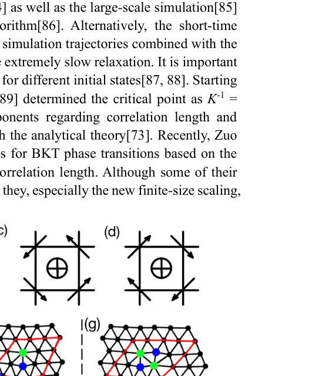
<figcaption class="paper-figure-caption"><b>Fig 1.</b> Fig. 1 Schematics of topological defects in spin systems ((a)-(d)) and 2D crystals ((e)-(g)). (a) A</figcaption>
</figure>
<figure class="paper-figure-card">
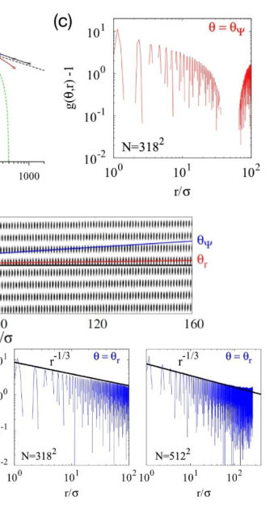
<figcaption class="paper-figure-caption"><b>Fig 2.</b> Fig. 2 Numerical procedure of the calculation of translational correlation function. (a) Translational</figcaption>
</figure>
<figure class="paper-figure-card">
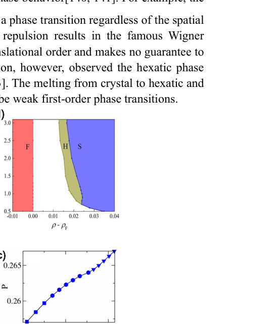
<figcaption class="paper-figure-caption"><b>Fig 3.</b> Fig. 3 Phase behaviors of several interacting point-like particle systems. (a) Phase diagram of the</figcaption>
</figure>
<figure class="paper-figure-card">
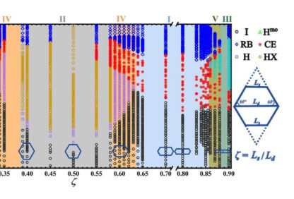
<figcaption class="paper-figure-caption"><b>Fig 4.</b> Fig. 4 Phase behavior of hard polygon systems. (a) Phase diagram of the hard regular polygon</figcaption>
</figure>
<figure class="paper-figure-card">
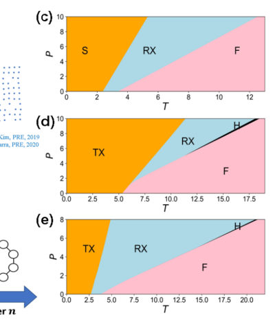
<figcaption class="paper-figure-caption"><b>Fig 5.</b> Fig. 5 Phase behaviors of the ball-stick polygon systems. (a) Ball-stick polygon model captures four</figcaption>
</figure>
</div>

<p><strong>Summary.</strong> This review surveys the theoretical landscape of 2D phase transitions, detailing established concepts like the Berezinskii-Kosterlitz-Thouless transition. It critically updates this knowledge by incorporating recent findings on how non-equilibrium active matter systems deviate from these classical predictions, pointing toward new avenues for understanding melting.</p>
<p><strong>Why it may be interesting.</strong> It provides a crucial bridge between classical equilibrium statistical mechanics (like BKT theory) and modern non-equilibrium physics, which is highly relevant for understanding complex many-body dynamics far from equilibrium.</p>
<details>
<summary>Detailed structure</summary>
<p><strong>Main problem.</strong> The review comprehensively analyzes two-dimensional (2D) phase transitions, focusing on the BKT transition and crystal melting, while extending the discussion to non-equilibrium active matter systems.</p>
<p><strong>Main result.</strong> The paper contrasts equilibrium predictions (like HMW and BKT theory) with novel phenomena observed in active matter, suggesting that non-equilibrium dynamics fundamentally alter the expected phase transition behavior.</p>
<p><strong>Method.</strong> It synthesizes results from Renormalization Group (RG) theory, continuum descriptions of topological defects (Coulomb gas), finite-size scaling analysis, and comparisons between different thermodynamic ensembles (NVT vs NPT).</p>
<p><strong>Model / system.</strong> The primary models include the XY spin model for continuous symmetry breaking, 2D crystalline solids undergoing melting, hard disk systems, and active Brownian particles (ABPs) in non-equilibrium settings.</p>
<p><strong>Key observables.</strong> Topological defect charge ($q$), stiffness ($
ho_{    ext{eff}}$), helicity modulus ($\gamma$), order parameters (translational $S$ and bond-orientational $\Psi$), and the behavior of P-V curves.</p>
<p><strong>Important parameters / regimes.</strong> Temperature ($T$), system size ($L$), interaction potential range ($n$ in $r^{-n}$), and activity/self-propulsion speed ($   ext{activity}$).</p>
<p><strong>Assumptions / limitations.</strong> The review notes that early theories rely on continuum descriptions, and numerical simulations are limited by finite-size effects and critical slowing down.</p>
<p><strong>Figures summary.</strong> Figures illustrate topological defects in spin systems and 2D crystals; one figure shows the calculation of translational correlation functions via reciprocal vector scanning; another details phase diagrams for hard polygons showing various melting routes (e.g., $   ext{S}  o   ext{TX}     o   ext{R}_X$).</p>
<p><strong>Paper structure.</strong> The review progresses logically from foundational theory (HMW/BKT) to detailed analysis of passive systems (melting via KTHNY), then explores the influence of particle shape and interaction potential range, culminating in a discussion of non-equilibrium active matter.</p>
</details>
<details>
<summary>Abstract</summary>
<p>In 1966, Hohenberg, Mermin and Wagner proved that long-wavelength fluctuations destabilize the long-range order of continuous symmetry in two-dimensional (2D) systems. Later in the 1970s, Berezinskii, Kosterlitz and Thouless developed the BKT theory describing an unconventional phase transition between quasi-long-range and short-range order in 2D systems driven by the binding-unbinding of topological defects, which has become a fundamental topic in statistical mechanics, condensed matter physics, and soft matter physics. One of the most important applications of the BKT theory is the melting of 2D crystals, whose mechanisms are not yet fully understood. Recently, this topic has been extended to the area of active matter, where the non-equilibrium nature leads to novel phenomena that deviate from the Hohenberg-Mermin-Wagner theorem. In this review, we first focus on the recent theoretical and computational progress in the 2D melting problem in passive systems, and then summarize the inspiring results obtained from non-equilibrium systems. The review closes with comments on several promising directions for predicting 2D melting scenarios and for understanding the non-equilibrium nature in 2D active matter systems.</p>
</details>
<p><sub><a href="#top">↑ back to top</a></sub></p>

<p><a id="paper-2606.24280"></a></p>
<h3 id="recursive-behavior-in-a-diatomic-fput-lattice"><a href="http://arxiv.org/abs/2606.24280v1">Recursive behavior in a diatomic FPUT lattice</a></h3>
<p><strong>Authors:</strong> Guo Deng, Andrea Pezzi, Genghong Lin, Miguel Onorato<br>
<strong>Type:</strong> theory · <strong>Category:</strong> statistical mechanics · <strong>PDF:</strong> <a href="https://arxiv.org/pdf/2606.24280v1">https://arxiv.org/pdf/2606.24280v1</a><br>
<strong>Analysis basis:</strong> full PDF text, analyzed in chunks
<strong>Topic relevance:</strong> 🔥 <code>non-equilibrium dynamics</code> <strong>4/5</strong> · <code>non-equilibrium universality</code> <strong>3/5</strong> · <code>scars &amp; prethermalization</code> <strong>3/5</strong> · <code>Frenkel-Kontorova</code> <strong>2/5</strong> · <code>Keldysh / 2PI / non-Gaussian methods</code> <strong>1/5</strong> · <code>driven-dissipative phase transition</code> <strong>1/5</strong> · <code>methods for driven-dissipative</code> <strong>1/5</strong></p>
<div class="figure-strip-hint">↔ Scroll figures horizontally</div>
<div class="paper-figures-scroll">
<figure class="paper-figure-card">
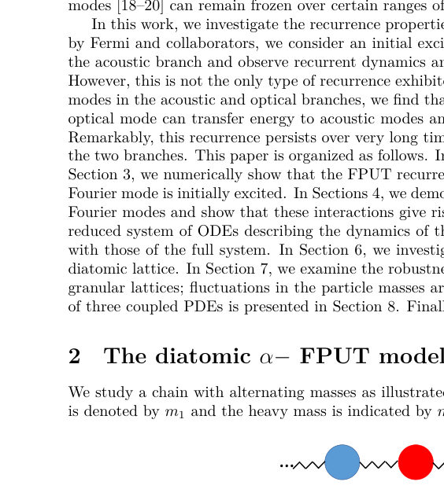
<figcaption class="paper-figure-caption"><b>Fig 1.</b> Figure 1: Lattice with alternating masses. Different colors represent particles with different masses.</figcaption>
</figure>
<figure class="paper-figure-card">
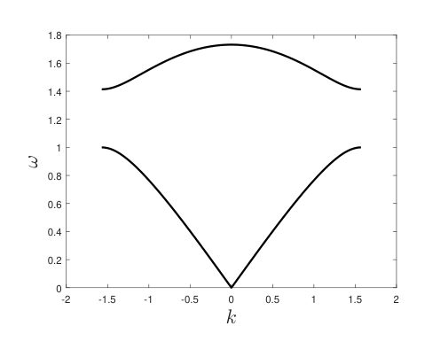
<figcaption class="paper-figure-caption"><b>Fig 2.</b> Figure 2: Dispersion relation in linear diatomic lattice, where the linear coefficient κ = 1, light mass m1 = 1 and heavy mass m2 = 2. The upper branch is the optical branch and the lower branch is the acoustical branch.</figcaption>
</figure>
<figure class="paper-figure-card">
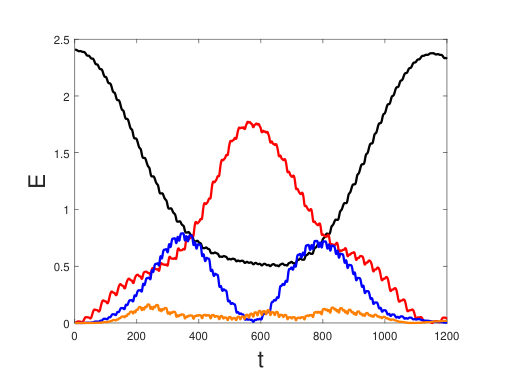
<figcaption class="paper-figure-caption"><b>Fig 3.</b> Figure 3: FPUT recurrence in diatomic lattice. The energy densities for four acoustical Fourier modes with lowest frequencies are represented by black, red, blue and orange curves respectively (frequencies from low to high).</figcaption>
</figure>
<figure class="paper-figure-card">
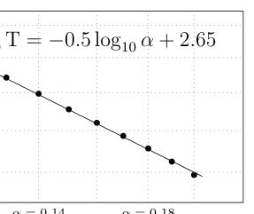
<figcaption class="paper-figure-caption"><b>Fig 4.</b> Figure 4: Log-log plot of recurrence period vs nonlinear strength α.</figcaption>
</figure>
<figure class="paper-figure-card">
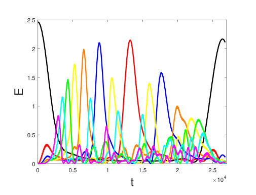
<figcaption class="paper-figure-caption"><b>Fig 5.</b> Figure 5: FPUT recurrence in diatomic lattice. The energy densities for eight acoustical Fourier modes with lowest frequencies are represented by black, red, blue, orange, yellow, green, cyan and magenta curves respectively (frequencies from low to high).</figcaption>
</figure>
</div>

<p><strong>Summary.</strong> This paper analyzes the recurrence behavior in a diatomic FPUT lattice by distinguishing between classical FPUT energy trapping and a new resonance-driven mechanism. The authors prove that resonant interactions between optical and acoustical modes can induce robust, long-lived energy exchange, which is mathematically modeled using reduced integrable PDEs.</p>
<p><strong>Why it may be interesting.</strong> The study provides a detailed theoretical framework for energy localization and long-time dynamics in nonlinear lattices, directly addressing concepts of energy transfer and quasi-periodicity relevant to non-equilibrium statistical mechanics.</p>
<details>
<summary>Detailed structure</summary>
<p><strong>Main problem.</strong> The study investigates the recurrent behavior of solutions within a diatomic Fermi–Pasta–Ulam–Tsingou (FPUT) lattice subjected to cubic anharmonic potentials.</p>
<p><strong>Main result.</strong> Two distinct recurrence types are found: classic FPUT recurrence and a novel type driven by three-wave resonant interactions between optical and acoustical modes, which is unique to diatomic lattices.</p>
<p><strong>Method.</strong> The analysis combines linear mode decomposition (finding optical/acoustical branches) with numerical simulations of energy density evolution in Fourier space, culminating in the derivation of reduced integrable PDE models in the continuous limit.</p>
<p><strong>Model / system.</strong> The system is a diatomic FPUT lattice with alternating masses and cubic anharmonic potential. The dynamics are analyzed using normal modes derived from the Hamiltonian, leading to coupled equations for specific resonant Fourier modes.</p>
<p><strong>Key observables.</strong> Energy distribution among Fourier modes over time; recurrence period ($T$); ratio $|E_0 - E_{\min}| / E_0$.</p>
<p><strong>Important parameters / regimes.</strong> Nonlinear strength ($\alpha$); mass ratios ($m_2/m_1$); initial excitation conditions (e.g., exciting specific resonant triads).</p>
<p><strong>Assumptions / limitations.</strong> The analysis often assumes that energy outside the interacting resonant triad is negligible, and in the continuous limit, it derives integrable PDE systems.</p>
<p><strong>Figures summary.</strong> Figures illustrate energy density recurrence over time for both resonant and non-resonant conditions; Figure 4 shows the log-log relationship between recurrence period and nonlinear strength $\alpha$.</p>
<p><strong>Paper structure.</strong> The paper progresses from establishing the diatomic model and linear modes, to identifying two distinct recurrence mechanisms (classic vs. resonance-induced), developing reduced models for the resonant triad, and finally comparing these behaviors across different potentials and mass fluctuations.</p>
</details>
<details>
<summary>Abstract</summary>
<p>We study the diatomic FPUT lattice with cubic anharmonic potential, and analyze the recurrent behaviour of its solutions. We find that two distinct types of recurrence occur. One type is the classic FPUT recurrence; for such recurrence, we find that the relation between recurrence period and nonlinear strength is similar to that in the monatomic case. The other type, which cannot exist in the monatomic lattice, is the recurrence due to the interactions between modes in the two branches of the dispersion relation. Indeed, we prove the existence of the optical-acoustical-acoustical resonant interaction between three Fourier modes for which a recurrent behavior in the distribution of the energy is observed. In addition, we develop a reduced Fourier-space dynamical model that reproduces the same recurrent behavior. We assess the robustness of our results through numerical simulations of the diatomic Toda lattice and the diatomic granular chain; in both cases, the same recursive behavior is observed. Finally, in the continuous limit, we derive from the diatomic model a system of three coupled PDEs which are known to be integrable.</p>
</details>
<p><sub><a href="#top">↑ back to top</a></sub></p>

<p><a id="paper-2606.24818"></a></p>
<h3 id="exact-log-odds-representation-and-mean-field-criticality-of-a-growing-social-group-model"><a href="http://arxiv.org/abs/2606.24818v1">Exact log-odds representation and mean-field criticality of a growing social group model</a></h3>
<p><strong>Authors:</strong> Xingfu Ke, Fanyuan Meng<br>
<strong>Type:</strong> theory · <strong>Category:</strong> statistical mechanics · <strong>PDF:</strong> <a href="https://arxiv.org/pdf/2606.24818v1">https://arxiv.org/pdf/2606.24818v1</a><br>
<strong>Analysis basis:</strong> full PDF text, analyzed in chunks
<strong>Topic relevance:</strong> 🔥 <code>non-equilibrium universality</code> <strong>4/5</strong> · <code>driven-dissipative phase transition</code> <strong>3/5</strong> · <code>non-equilibrium dynamics</code> <strong>3/5</strong> · <code>Keldysh / 2PI / non-Gaussian methods</code> <strong>1/5</strong> · <code>correlated / nonlocal dissipation</code> <strong>1/5</strong> · <code>entanglement &amp; information structure</code> <strong>1/5</strong> · <code>methods for driven-dissipative</code> <strong>1/5</strong></p>
<div class="figure-strip-hint">↔ Scroll figures horizontally</div>
<div class="paper-figures-scroll">
<figure class="paper-figure-card">
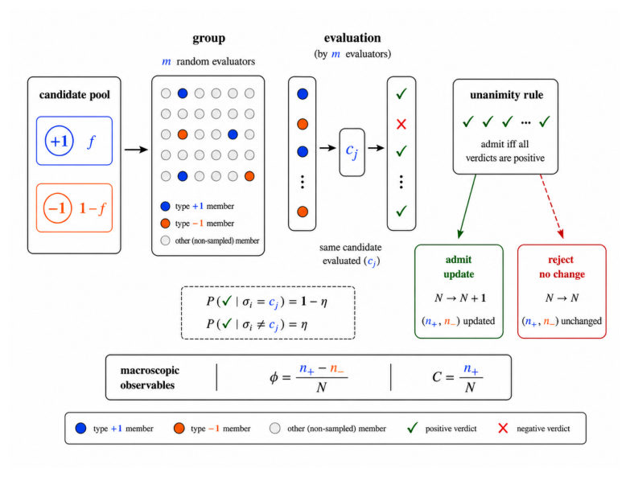
<figcaption class="paper-figure-caption"><b>Fig 1.</b> Figure 1: Schematic of the growing-group model. A candidate drawn from the pool (type +1 with probability</figcaption>
</figure>
<figure class="paper-figure-card">
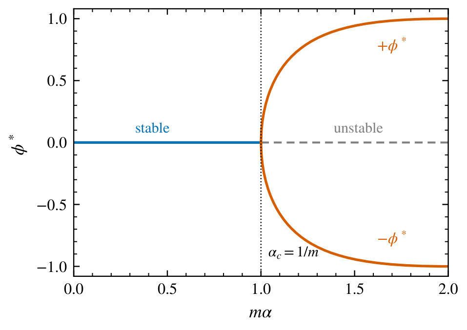
<figcaption class="paper-figure-caption"><b>Fig 2.</b> Figure 2: Supercritical pitchfork bifurcation for f = 1/2, m = 2. Solid: stable fixed points; dashed: unstable.</figcaption>
</figure>
<figure class="paper-figure-card">
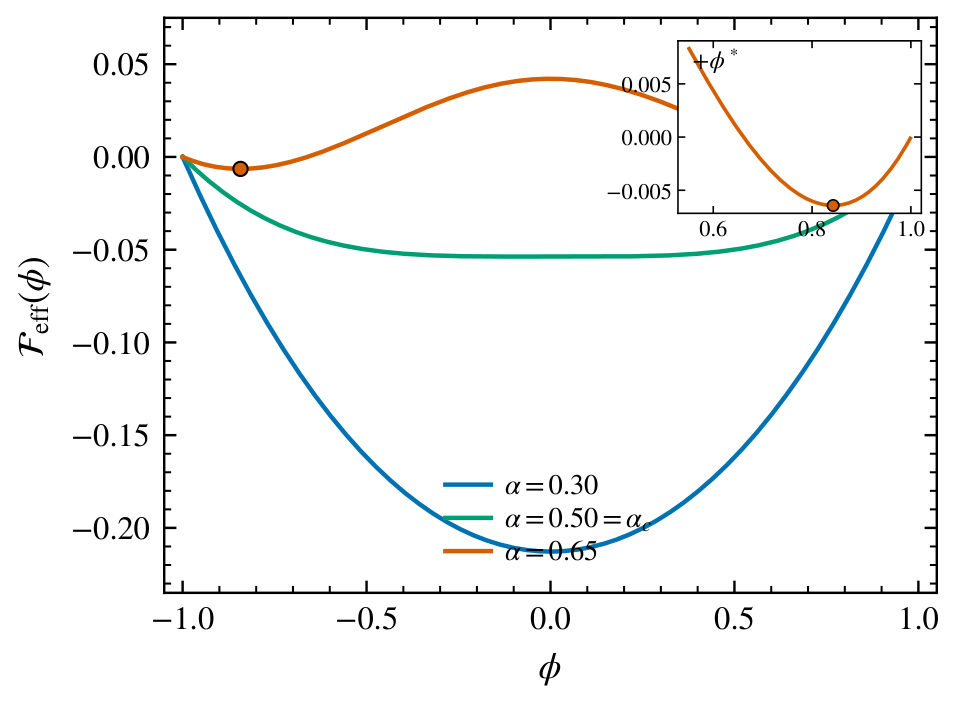
<figcaption class="paper-figure-caption"><b>Fig 3.</b> Figure 3: Landau-like effective potential Feff(ϕ) for m = 2, f = 1/2. α &lt; αc: single well (disordered).</figcaption>
</figure>
<figure class="paper-figure-card">
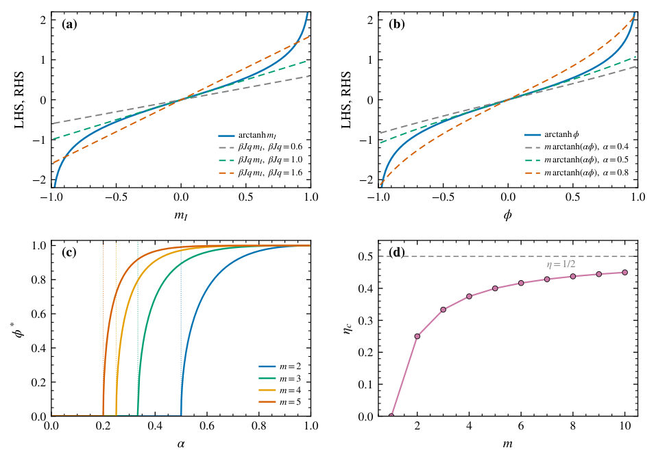
<figcaption class="paper-figure-caption"><b>Fig 4.</b> Figure 4: Structural comparison between the mean-field Ising model and the growing-group model. (a) Ising:</figcaption>
</figure>
<figure class="paper-figure-card">
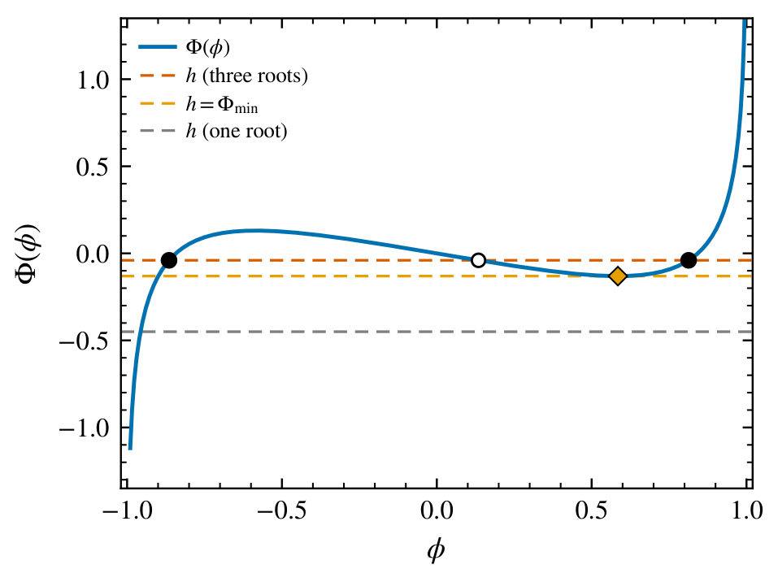
<figcaption class="paper-figure-caption"><b>Fig 5.</b> Figure 5: Saddle-node bifurcation for f &lt; 1/2 (m = 2, α = 0.65). Small |h|: three roots. Critical h = Φmin:</figcaption>
</figure>
</div>

<p><strong>Summary.</strong> This work develops an exact mean-field theory for a growing social group model whose dynamics are driven by consensus inference rather than thermal equilibrium. By reformulating the process in log-odds space, the authors derive critical exponents and demonstrate that non-equilibrium growth can organize complex phase transitions using tools analogous to those from statistical mechanics.</p>
<p><strong>Why it may be interesting.</strong> It provides a powerful, non-equilibrium analogue to classical critical phenomena studies, showing how concepts like universality and scaling can emerge from purely growth-driven, information-theoretic processes.</p>
<details>
<summary>Detailed structure</summary>
<p><strong>Main problem.</strong> The paper analyzes critical phenomena and collective behavior in a growing social group model that is intrinsically non-equilibrium, focusing on how consensus builds over time.</p>
<p><strong>Main result.</strong> It establishes an exact mean-field theory for this growth process, deriving critical exponents and showing that the system's dynamics can be rigorously analyzed using tools from information geometry and RG theory without assuming a Hamiltonian structure.</p>
<p><strong>Method.</strong> The analysis reformulates the stochastic process as a gradient flow on logarithmic time ($  au = \ln N$), leading to an effective potential and fixed-point equations solvable via log-odds (arctanh) transformations.</p>
<p><strong>Model / system.</strong> The model is a growing social group where membership updates are governed by noisy, consensus-driven admissions based on multiple independent evaluations ($m$). The dynamics are Hamiltonian-free, making it a non-equilibrium system.</p>
<p><strong>Key observables.</strong> Polarization ($\phi$), effective potential ($F_{	ext{eff}}$), critical exponents ($eta=1/2, \gamma=1, \delta=3$), and the rate of entropy production $\langle\dot{s}
angle$.</p>
<p><strong>Important parameters / regimes.</strong> Evaluation reliability ($\alpha = 1 - 2\eta$), number of evaluators ($m$), and prior bias field ($h$). Criticality occurs when $m\alpha$ overcomes growth dilution.</p>
<p><strong>Assumptions / limitations.</strong> The analysis relies on the mean-field limit (all-to-all evaluation) and uses mathematical tools like martingale convergence theory to prove convergence to deterministic ODEs in log time.</p>
<p><strong>Figures summary.</strong> Figures illustrate the effective potential $F_{	ext{eff}}(\phi)$ showing transitions, phase diagrams mapping out different selection rules (DS, PA), and comparison plots contrasting the nested arctanh structure with the standard Ising model.</p>
<p><strong>Paper structure.</strong> The paper develops a systematic three-layer framework: core theory (Landau potential/Ising comparison), mathematical foundations (Pólya-urn martingale convergence/RG flow), and complementary perspectives (irreversibility via entropy production).</p>
</details>
<details>
<summary>Abstract</summary>
<p>We present an exact analytical reformulation of a growing social group model -- a Hamiltonian-free nonequilibrium process in which a group grows by noisy, consensus-driven admission. Cast as a gradient flow on logarithmic time, the fixed-point structure collapses to a single self-consistent equation: $\arctanh(φ^*) = m \cdot \arctanh(αφ^*)$, where $φ$ is the polarization, $α=1-2η$ the evaluation reliability, and $m$ the number of evaluators. The equation has a direct log-odds interpretation: each verdict contributes log-likelihood ratio $2\arctanh(αφ)$; unanimity accumulates $m$ independent evidence pieces. The dynamics thus constitutes an exact mean-field theory of self-consistent inference, ordering when the collective gain $mα$ overcomes the dilution of growth. We develop a systematic three-layer framework: core theory (Landau-like effective potential, comparison with the mean-field Ising model, and features without equilibrium counterpart), mathematical foundations (criticality from correlated verdicts, Pólya-urn martingale convergence, and an RG-like flow with group size as scale), and complementary perspectives on irreversibility and information geometry. A frozen-$N$ Freidlin--Wentzell quasipotential yields Kramers-type escape estimates for metastable states, while Monte Carlo simulations collapse onto a parameter-free deterministic master curve on logarithmic time. Systematic comparison with the mean-field Ising model reveals shared critical exponents but a nested arctanh structure unique to growth. These results provide a detailed analytical characterization of a minimal model of growth-driven collective behavior and map which elements of the equilibrium critical toolbox -- suitably reinterpreted -- survive without a Hamiltonian.</p>
</details>
<p><sub><a href="#top">↑ back to top</a></sub></p>

<p><a id="paper-2606.24002"></a></p>
<h3 id="picosecond-schrodinger-cat-states-for-ultrafast-optical-quantum-processing"><a href="http://arxiv.org/abs/2606.24002v1">Picosecond Schrödinger cat states for ultrafast optical quantum processing</a></h3>
<p><strong>Authors:</strong> Mamoru Endo, Kan Takase, Takefumi Nomura, Tatsuki Sonoyama, Kazuma Takahashi, Sachiko Takasu, Daiji Fukuda, Takahiro Kashiwazaki, Asuka Inoue, Takeshi Umeki, Peter van Loock, Petr Marek, Radim Filip, Warit Asavanant, Akira Furusawa<br>
<strong>Type:</strong> experiment · <strong>Category:</strong> quantum information and computing · <strong>PDF:</strong> <a href="https://arxiv.org/pdf/2606.24002v1">https://arxiv.org/pdf/2606.24002v1</a><br>
<strong>Analysis basis:</strong> full PDF text, analyzed in chunks
<strong>Topic relevance:</strong> 🔥 <code>QC/QI experiment</code> <strong>4/5</strong> · <code>interference shaping light</code> <strong>3/5</strong> · <code>quantum optics experiment</code> <strong>3/5</strong> · <code>quantum measurements</code> <strong>2/5</strong></p>
<div class="figure-strip-hint">↔ Scroll figures horizontally</div>
<div class="paper-figures-scroll">
<figure class="paper-figure-card">
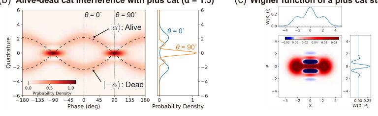
<figcaption class="paper-figure-caption"><b>Fig 1.</b> Figure 1: Generalized photon subtraction in picosecond wave packets for high-rate non- Gaussian-resource generation. (a) Generalized photon subtraction (GPS) is implemented by interfering two squeezed states (Sqz.) on a beam splitter (BS) and heralding on photon-number- resolving detection (PNRD). The resulting non-Gaussian state (a squeezed cat state) can be fur- ther processed by Gaussian operations, including optional adaptive squeezing ( ˆS), and serves as a resource for adaptive breeding toward GKP-state generation and cat-code quantum infor- mation processing. In this work, GPS is extended from conventional nanosecond-scale wave packets to picosecond temporal modes, thereby addressing...</figcaption>
</figure>
<figure class="paper-figure-card">
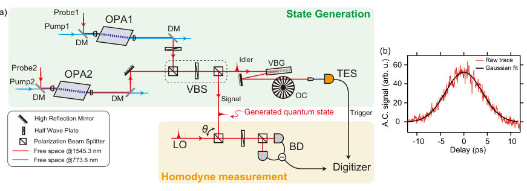
<figcaption class="paper-figure-caption"><b>Fig 2.</b> Figure 2: (a) Experimental apparatus for quantum-state generation and measurement. Two opti- cal parametric amplifiers (OPA1 and OPA2) generate squeezed-vacuum fields that are combined to prepare non-Gaussian quantum states via GPS. One output arm from the variable beam split- ter (VBS) is spectrally filtered by a volume Bragg grating (VBG) and detected with a transition- edge sensor (TES)-based photon-number-resolving detector, providing the heralding trigger. The generated state in the other arm is analyzed by balanced homodyne detection using a bal- anced detector (BD) and a local oscillator (LO) with controllable phase θ, and the quadrature signals are recorded by a high-speed...</figcaption>
</figure>
<figure class="paper-figure-card">
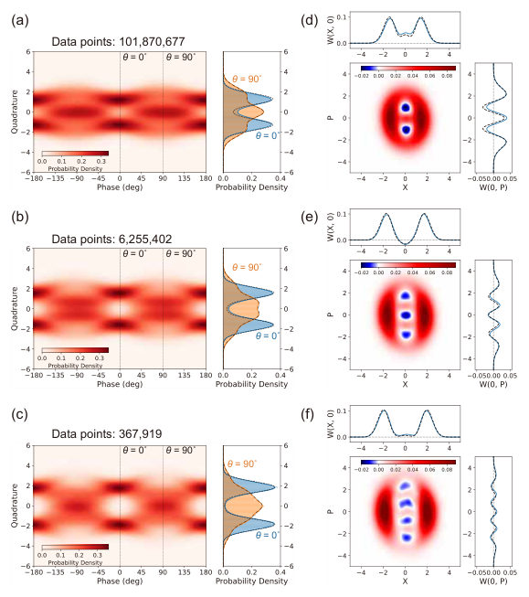
<figcaption class="paper-figure-caption"><b>Fig 3.</b> Figure 3: (a–c) Phase-dependent quadrature marginal distributions of the states conditioned on photon-number detection events with n = 2, 3, and 4. Heat maps show the angle-resolved marginals. The right-hand panels compare cross sections at θ = 0◦and 90◦with the corre- sponding experimental histograms (bars), reconstructed marginals (solid lines), and simulations (dashed and dash-dotted lines). The number of quadrature samples used for the quantum-state tomography is indicated at the top of each heat map. (d–f) Reconstructed Wigner functions for n = 2, 3, and 4, together with cross sections along the X and P axes (solid lines). The dashed lines show the corresponding simulations. (g)...</figcaption>
</figure>
</div>

<p><strong>Summary.</strong> The research demonstrates a method to generate high-quality, multi-photon Schrödinger cat states using picosecond optical pulses. By overcoming previous rate limitations, they achieve an effective cat-state amplitude close to the theoretical requirement for fault-tolerant quantum error correction codes like GKP states.</p>
<p><strong>Why it may be interesting.</strong> This work directly addresses the engineering hurdles—specifically the temporal mode bandwidth—that limit the scalability of photonic quantum information processing by demonstrating high-rate generation of complex non-Gaussian resources.</p>
<details>
<summary>Detailed structure</summary>
<p><strong>Main problem.</strong> The primary challenge is generating non-Gaussian quantum states, such as Schrödinger cat states, at a high repetition rate necessary for fault-tolerant optical quantum computation.</p>
<p><strong>Main result.</strong> The authors successfully demonstrated multi-photon generalized photon subtraction in picosecond temporal modes, achieving an effective cat-state amplitude ($\alpha_{	ext{eff}} = 1.69$) relevant for cat-code architectures and GKP state breeding.</p>
<p><strong>Method.</strong> State generation is achieved via interfering two squeezed vacuum states on a beam splitter, heralded by photon-number-resolving detection (TES), and characterized using pulsed homodyne detection matched to ultrashort pulses.</p>
<p><strong>Model / system.</strong> The experiment uses broadband Type-0 PPLN waveguides to generate squeezed light, which is then processed optically. The system operates in picosecond temporal modes ($\sim 10$ ps) at a high repetition rate (5 MHz pump).</p>
<p><strong>Key observables.</strong> Effective cat-state amplitude ($\alpha_{	ext{eff}}$), Wigner function negativity (indicating non-Gaussianity), and the number of negative regions observed for multi-photon heralding.</p>
<p><strong>Important parameters / regimes.</strong> Picosecond temporal mode width, $\alpha_{	ext{eff}} = 1.69$, target GKP amplitude ($\approx 1.77$), and high repetition rate capability (5 MHz).</p>
<p><strong>Assumptions / limitations.</strong> The reported $\alpha_{	ext{eff}}$ values are extracted without full loss correction; the study also compares experimental results to ideal, lossless simulations.</p>
<p><strong>Figures summary.</strong> Figures illustrate the apparatus setup, phase-dependent quadrature distributions showing interference fringes, and reconstructed Wigner functions exhibiting negative regions for multi-photon heralding events.</p>
<p><strong>Paper structure.</strong> The paper progresses from identifying the rate bottleneck in state generation to detailing the experimental setup (squeezed sources, VBS, PNRD), presenting measurements of $\alpha_{	ext{eff}}$ and Wigner function negativity, and finally discussing the implications for GKP lattice breeding.</p>
</details>
<details>
<summary>Abstract</summary>
<p>Non-Gaussian states are essential resources for universal, fault-tolerant optical quantum computing, but their generation rate remains limited by low heralding probabilities and operation in nanosecond temporal modes. Here, we demonstrate multi-photon generalized photon subtraction in picosecond optical wave packets, establishing the state-generation capability required for high-rate operation by addressing the temporal-mode bottleneck that has constrained the achievable rate. Two interfering ultrashort squeezed vacua are heralded by photon-number-resolving detection with a high-speed transition-edge sensor and characterized by pulsed homodyne detection matched to 10-ps temporal modes at a 5-MHz pump repetition rate. We reconstruct Wigner functions without loss correction that exhibit up to four distinct negative regions for four-photon heralding, together with an effective cat-state amplitude of $α_{\mathrm{eff}} = 1.69$. This amplitude approaches the range of practical relevance for fault-tolerant cat-code architectures and for adaptive breeding toward logical-qubit generation, while the picosecond temporal mode establishes a platform compatible with high-rate, scalable time-multiplexed photonic architectures.</p>
</details>
<p><sub><a href="#top">↑ back to top</a></sub></p>

<p><a id="paper-2606.24036"></a></p>
<h3 id="spectrally-engineered-collinear-type-0-spdc-source-with-enhanced-spectral-brightness-for-entanglement-distribution"><a href="http://arxiv.org/abs/2606.24036v1">Spectrally engineered collinear type-0 SPDC source with enhanced spectral brightness for entanglement distribution</a></h3>
<p><strong>Authors:</strong> Dong-Gil Im, Jungmo Lee, Kyungdeuk Park, Dongkyu Kim, Yonggi Jo, Yong Sup Ihn<br>
<strong>Type:</strong> experiment · <strong>Category:</strong> quantum information and computing · <strong>PDF:</strong> <a href="https://arxiv.org/pdf/2606.24036v1">https://arxiv.org/pdf/2606.24036v1</a><br>
<strong>Analysis basis:</strong> full PDF text, analyzed in chunks
<strong>Topic relevance:</strong> 🔥 <code>quantum optics experiment</code> <strong>4/5</strong> · <code>QC/QI experiment</code> <strong>3/5</strong> · <code>interference shaping light</code> <strong>3/5</strong> · <code>entanglement &amp; information structure</code> <strong>1/5</strong> · <code>free-space correlated emission</code> <strong>1/5</strong></p>
<div class="figure-strip-hint">↔ Scroll figures horizontally</div>
<div class="paper-figures-scroll">
<figure class="paper-figure-card">
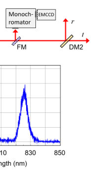
<figcaption class="paper-figure-caption"><b>Fig 1.</b> Fig. 1. (a) Experimental setup for photon source where the ppKTP crystal satisfying the degenerate down-conversion of 405 nm pump photon to 810 nm photon pair is pumped by a ultra-narrowband pump laser operating at 405.143 nm center wavelength. DM, dichroic mirror; FM, flip mirror. (b) Spectrum for signal and idler photons measured by a monochromator and EMCCD. The left spectral peak is centered at 797.3 nm with a full width at half maximum (FWHM) of 5.77 nm, while the right peak is centered at 825.4 nm with a FWHM of 5.97 nm.</figcaption>
</figure>
<figure class="paper-figure-card">
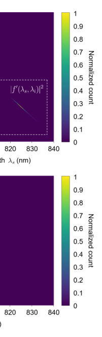
<figcaption class="paper-figure-caption"><b>Fig 2.</b> Fig. 2. (a) JSI before passing through DM2 shown in Fig 1(a). The result clearly shows the spectrally split structure. (b) JSI after passing through DM2. The reflected and transmitted photons show a single continuous joint spectrum.</figcaption>
</figure>
<figure class="paper-figure-card">
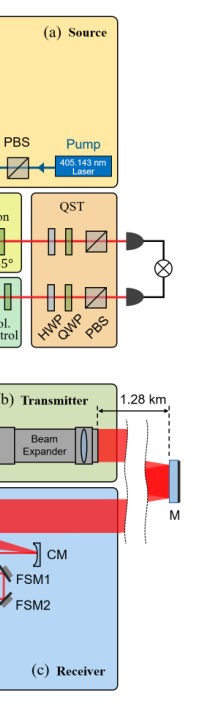
<figcaption class="paper-figure-caption"><b>Fig 3.</b> Fig. 3. Experimental setup for polarization entanglement source and entanglement distribution via 2.56 km free-space. (a) Polarization entanglement source using a Sagnc interferometer with the spectrally engineered collinear type-0 SPDC source. (b) and (c) are the transmitter and receiver system, respectively. M, mirror; HWP, half-wave plate; QWP, quarter-wave plate; DM, dichroic mirror; FM, flip mirror; PBS, polarizing beam splitter; BS, beam splitter; PM, off-axis parabolic mirror; CM, concave mirror; FSM, fast steering mirror; PSD, position-sensitive detector; IF, interference filter</figcaption>
</figure>
<figure class="paper-figure-card">
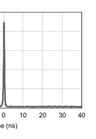
<figcaption class="paper-figure-caption"><b>Fig 4.</b> Fig. 4. Temporal correlation between the locally detected 𝑟photon and the 𝑡photon transmitted through the 2.56 km free-space channel, measured using a TCSPC system. After compensating the propagation delay, a coincidence peak appears at zero relative delay.</figcaption>
</figure>
<figure class="paper-figure-card">
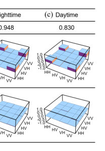
<figcaption class="paper-figure-caption"><b>Fig 5.</b> Fig. 5. Results for polarization entanglement distribution. Density matrices recon- structed via QST and the corresponding entanglement fidelities are shown for (a) the local reference, (b) the nighttime free-space transmission, and (c) the daytime free-space transmission.</figcaption>
</figure>
</div>

<p><strong>Summary.</strong> The research presents a method to enhance entangled photon source brightness by spectrally engineering the spontaneous parametric down-conversion process using detuned pumping. This technique yields a highly usable, narrow-band source that successfully generates and distributes polarization entanglement over several kilometers of free space. The findings establish spectral control as a practical route for developing robust quantum communication hardware.</p>
<p><strong>Why it may be interesting.</strong> This work provides an experimental blueprint for creating compact, high-performance quantum light sources whose spectral properties are actively controlled, which is crucial for scaling up quantum communication networks beyond laboratory settings.</p>
<details>
<summary>Detailed structure</summary>
<p><strong>Main problem.</strong> The primary challenge addressed is developing entangled photon sources with high spectral brightness suitable for practical quantum communication and networking applications.</p>
<p><strong>Main result.</strong> The authors successfully demonstrated a spectrally engineered SPDC source achieving high spectral brightness ($0.507 	ext{ MHz}\cdot	ext{mW}^{-1}\cdot	ext{nm}^{-1}$) and distributing polarization entanglement over a $2.56 	ext{ km}$ free-space link.</p>
<p><strong>Method.</strong> The method involves spectrally engineering the SPDC process by using an ultra-narrowband laser detuned from degeneracy, which concentrates photon pair generation into a narrow bandwidth while maintaining collinear operation.</p>
<p><strong>Model / system.</strong> The physical system is a type-0 spontaneous parametric down-conversion (SPDC) source pumped in a ppKTP crystal. The process generates entangled photon pairs, which are then used to create polarization entanglement via a Sagnac interferometer and tested over a free-space quantum channel.</p>
<p><strong>Key observables.</strong> Coincidence rate ($44.6 	ext{ kHz}$), detected spectral brightness ($0.507 	ext{ MHz}\cdot	ext{mW}^{-1}\cdot	ext{nm}^{-1}$), entanglement fidelity, and temporal correlation over distance.</p>
<p><strong>Important parameters / regimes.</strong> Pump power ($15 \mu	ext{W}$), free-space channel length ($2.56 	ext{ km}$), spectral bandwidth ($\Delta\lambda_{bp} = 5.87 	ext{ nm}$).</p>
<p><strong>Assumptions / limitations.</strong> The calculation of spectral brightness does not account for all optical transmission losses, and the degradation in daytime fidelity is attributed to background noise rather than source performance.</p>
<p><strong>Figures summary.</strong> Figures illustrate the experimental setup (collinear pumping, Sagnac interferometer), the spectrally split nature of the photon pairs using JSI calculations, temporal correlation confirmation over distance, and quantum state tomography results showing entanglement fidelity.</p>
<p><strong>Paper structure.</strong> The paper details the spectral engineering technique to enhance brightness, demonstrates the source's ability to generate polarization entanglement via a Sagnac setup, and validates this distribution capability by transmitting the entangled pairs over a long free-space link while measuring temporal correlations and fidelity.</p>
</details>
<details>
<summary>Abstract</summary>
<p>Entangled photon sources with high spectral brightness are important resources for photonic quantum information processing, particularly in quantum communication and quantum networking where usable photon flux of entangled photons is often constrained by channel loss and source inefficiency. Here, we demonstrate a spectrally engineered type-0 spontaneous parametric down-conversion (SPDC) source with enhanced spectral brightness for entanglement distribution. By pumping a 30-mm ppKTP crystal with an ultra-narrowband laser slightly detuned from degeneracy, photon-pair generation is concentrated into a narrow spectral bandwidth while retaining the strong nonlinear interaction of type-0 phase matching. The source produces a coincidence rate of 44.6 kHz corresponding to a detected spectral brightness of 0.507 MHz/mW/nm. We further integrate the source into a Sagnac interferometer to generate polarization-entangled photon pairs and demonstrate entanglement distribution through a 2.56 km free-space round-trip channel. Our results show that spectral engineering provides a practical route to compact, spectrally bright entangled-photon sources for quantum communication applications.</p>
</details>
<p><sub><a href="#top">↑ back to top</a></sub></p>

<p><a id="paper-2606.24864"></a></p>
<h3 id="universality-beyond-the-kibble-zurek-mechanism-in-the-condensation-of-coherently-coupled-bose-gases"><a href="http://arxiv.org/abs/2606.24864v1">Universality beyond the Kibble-Zurek mechanism in the condensation of coherently coupled Bose gases</a></h3>
<p><strong>Authors:</strong> Subhadeep Patra, Paolo Comaron, Arko Roy<br>
<strong>Type:</strong> theory · <strong>Category:</strong> quantum gases · <strong>PDF:</strong> <a href="https://arxiv.org/pdf/2606.24864v1">https://arxiv.org/pdf/2606.24864v1</a><br>
<strong>Analysis basis:</strong> full PDF text, analyzed in chunks
<strong>Topic relevance:</strong> 🔥 <code>non-equilibrium universality</code> <strong>4/5</strong> · <code>non-equilibrium dynamics</code> <strong>3/5</strong> · <code>Keldysh / 2PI / non-Gaussian methods</code> <strong>1/5</strong> · <code>analog quantum simulation</code> <strong>1/5</strong> · <code>correlated / nonlocal dissipation</code> <strong>1/5</strong> · <code>driven-dissipative phase transition</code> <strong>1/5</strong> · <code>methods for driven-dissipative</code> <strong>1/5</strong></p>
<div class="figure-strip-hint">↔ Scroll figures horizontally</div>
<div class="paper-figures-scroll">
<figure class="paper-figure-card">
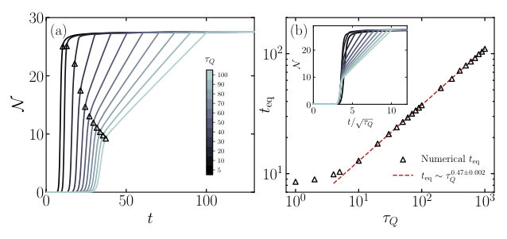
<figcaption class="paper-figure-caption"><b>Fig 1.</b> FIG. 1. Characterization of the equilibration time teq. (a) Scaled condensate norm N(t) as a function of time for different quench times τQ ranging from 5 to 1000. Each curve is averaged over R = 100 stochastic trajectories. Black triangles mark the equilibration time teq. (b) Equilibration time teq as a function of the quench time τQ. Fits in the range τQ = 30–1000 show good agreement with Kibble–Zurek scaling, teq ∼τ 0.47±0.002 Q . Inset: Growth of the condensate norm N versus the scaled time t/√τQ. For t &lt; teq, the curves collapse onto a universal form for all τQ except the fastest quench τQ = 5, consistent with Kibble–Zurek behavior.</figcaption>
</figure>
<figure class="paper-figure-card">
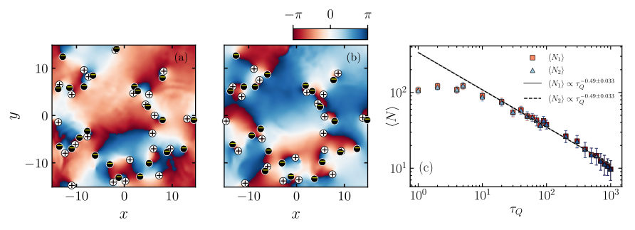
<figcaption class="paper-figure-caption"><b>Fig 2.</b> FIG. 2. Kibble–Zurek scaling of vortex defects without considering their topological charge evaluated at the equilibration time t/teq ∼1 for quench times τQ ranging from 1 to 1000. (a,b) Phase profiles of the two spin components at teq, with vortices and antivortices indicated by positive and negative winding numbers, respectively. (c) Universal power-law scaling of the mean vortex number ⟨N⟩with the quench time τQ. For the two spin components, the scalings are ⟨N1⟩∝τ −0.49±0.033 Q and ⟨N2⟩∝τ −0.49±0.033 Q . Fits are obtained using a weighted least-squares procedure that accounts for the uncertainty of each data point. Error bars denote one standard deviation over R = 100 independent noise...</figcaption>
</figure>
<figure class="paper-figure-card">
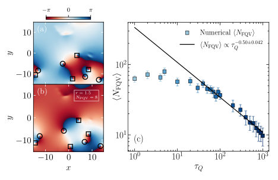
<figcaption class="paper-figure-caption"><b>Fig 3.</b> FIG. 3. (a,b) Phase profiles of the two spin components, ϕ1 and ϕ2, at t/teq = 1.92. For representation purpose, a later time snapshot is chosen to clearly highlight vortex pairing, as the number of vortices is relatively small for τQ = 50. Vortices with winding number w = −1 (squares) and w = +1 (circles) are indicated in both components. Vortices with equal wind- ing in the two components pair to form full quantum vortices (FQVs), subject to the spatial pairing threshold. (c) Mean number of FQVs, ⟨NFQV⟩, as a function of the quench time τQ computed at t/teq ∼1 for the spatial pairing threshold r = 1.5. The blue markers denote numerical data, with darker shades corresponding to slower...</figcaption>
</figure>
<figure class="paper-figure-card">
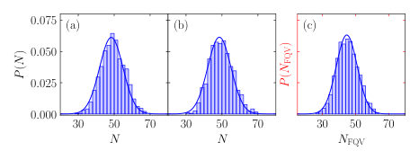
<figcaption class="paper-figure-caption"><b>Fig 4.</b> FIG. 4. Panels (a)-(b) show the probability distribution of the number of point defects (without considering topological charge) at t/teq = 1 for the two spin components, respectively for the quench time τQ = 50. The solid curves represent the theoretical normal distribution given by Eq. (13). Panel (c) displays the corresponding distribution for FQVs, with the solid line again indicating Eq. (13). All histograms are constructed from R = 1000 independent noise realizations.</figcaption>
</figure>
<figure class="paper-figure-card">
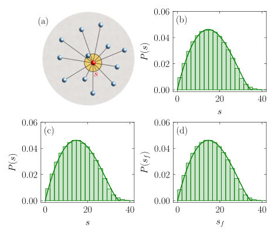
<figcaption class="paper-figure-caption"><b>Fig 5.</b> FIG. 5. Pairwise distance distribution of vortices at t/teq = 1 for the quench time τQ = 50. Panel (a) corresponds to a schematic representation of random points (vortices) with a reference vortex (red) on a circular disk of radius R. The 1st nearest neighbor (NN) of the reference vortex is indicated using a circle with radius s. (b)-(c) Distance distributions of vortices for the two spin components (j = 1, 2), irrespective of their topological charge. (d) Pairwise distance distribu- tion of FQVs. All histograms are constructed from R = 1000 stochastic realizations using 20 bins. The solid curves rep- resent the theoretical disk line-picking distribution given by Eq. (15) for a disk of...</figcaption>
</figure>
</div>

<p><strong>Summary.</strong> The paper investigates how topological defects form during the non-equilibrium condensation of a coherently coupled Bose gas. By analyzing defect statistics using advanced tools like Poisson Point Processes and Spatial Form Factors, the authors demonstrate that the resulting spatial organization exhibits universal geometry beyond standard Kibble-Zurek scaling. This establishes a fundamental statistical description for defect formation in such quantum systems.</p>
<p><strong>Why it may be interesting.</strong> This work provides a rigorous quantitative framework for characterizing the emergent geometry of defects in interacting quantum systems, extending fundamental concepts like KZM into regimes involving multiple coupled components. The use of SFF connects condensed matter physics to spectral analysis techniques from quantum chaos.</p>
<details>
<summary>Detailed structure</summary>
<p><strong>Main problem.</strong> The study investigates the universal spatial statistics of topological defects formed during the non-equilibrium condensation of a coherently coupled Bose gas, aiming to establish physics beyond standard Kibble-Zurek mechanism (KZM) predictions.</p>
<p><strong>Main result.</strong> The defect positions are found to follow a homogeneous Poisson point process (PPP), revealing a universal stochastic geometry that persists even when considering composite topological defects. This universality is confirmed by analyzing Voronoi tessellation and the Spatial Form Factor (SFF).</p>
<p><strong>Method.</strong> The analysis employs the stochastic projected Gross-Pitaevskii equation (SPGPE) framework, combining theoretical scaling arguments with advanced tools from stochastic geometry like PPP modeling, Poisson-Voronoi tessellation, and SFF calculations.</p>
<p><strong>Model / system.</strong> The system is a coherently coupled Bose gas in two hyperfine states undergoing a quench driven by a linear variation of the chemical potential. The dynamics are modeled using the SPGPE for a 2D system.</p>
<p><strong>Key observables.</strong> Topological defects (elementary and composite Full Quantum Vortices, FQVs); defect density ($
ho$); equilibration time ($t_{eq}$); Poisson point process statistics; Voronoi cell area distribution; Spatial Form Factor (SFF).</p>
<p><strong>Important parameters / regimes.</strong> Quench rate ($  au_Q$), coupling strength ($\Omega$), and the ratio of components' interactions ($g_{12}/g$).</p>
<p><strong>Assumptions / limitations.</strong> The dynamics are projected onto low-energy modes via SPGPE, and the underlying spatial statistics are assumed to be well described by a Poisson Point Process (PPP).</p>
<p><strong>Figures summary.</strong> Figures illustrate condensate norm growth and equilibration time scaling; they also show pair-distance distributions, nearest-neighbor spacing histograms conditioned on topological charge, and SFF plots comparing numerical results against analytical PPP predictions.</p>
<p><strong>Paper structure.</strong> The paper progresses by first establishing the non-equilibrium dynamics (determining $t_{eq}$), then analyzing defect numbers ($\langle N 
angle$) via KZM scaling, and finally delving into spatial statistics using PPP, Voronoi tessellation, and SFF to prove universal geometric organization.</p>
</details>
<details>
<summary>Abstract</summary>
<p>We study the universal spatial statistics of point-like topological defects formed during the nonequilibrium condensation of a coherently coupled Bose gas using the stochastic projected Gross-Pitaevskii equation. The symmetry-breaking transition is driven by a linear quench of the chemical potential, leading to stochastic vortex nucleation in the individual condensate components. When the two components are considered together, these elementary defects may combine across components to emerge as composite topological defects known as full quantum vortices. Beyond the mean defect density predicted by the Kibble-Zurek mechanism (KZM), we investigate the spatial organization of both the elementary and composite defects and show that their positions are well described by a Poisson point process, revealing a universal stochastic geometry. This universality is further described through Voronoi tessellation, whose cell-area statistics follow Poisson-Voronoi predictions. We also introduce the spatial form factor for characterizing the vortex configurations and demonstrate the emergence of a characteristic dip-ramp-plateau structure. Our results establish universal stochastic geometry of topological defects beyond conventional Kibble-Zurek scaling and identify it as a fundamental feature of nonequilibrium condensation in coherently coupled Bose gases.</p>
</details>
<p><sub><a href="#top">↑ back to top</a></sub></p>

<p><a id="paper-2606.24772"></a></p>
<h3 id="a-high-fidelity-two-qubit-gate-for-multimode-superconducting-p-mon-qubits"><a href="http://arxiv.org/abs/2606.24772v1">A high-fidelity two-qubit gate for multimode superconducting P-mon qubits</a></h3>
<p><strong>Authors:</strong> Frederik Pfeiffer, Federico A. Roy, Niklas J. Glaser, Julius Feigl, Leon Koch, Kevin Kiener, Gleb Krylov, Johannes Schirk, Christian M. F. Schneider, Lasse Södergren, Florian Wallner, Max Werninghaus, Carlos A. Riofrío, Stefan Filipp<br>
<strong>Type:</strong> both · <strong>Category:</strong> quantum information and computing · <strong>PDF:</strong> <a href="https://arxiv.org/pdf/2606.24772v1">https://arxiv.org/pdf/2606.24772v1</a><br>
<strong>Analysis basis:</strong> full PDF text, analyzed in chunks
<strong>Topic relevance:</strong> 🔥 <code>QC/QI experiment</code> <strong>4/5</strong> · <code>methods for driven-dissipative</code> <strong>3/5</strong> · <code>Keldysh / 2PI / non-Gaussian methods</code> <strong>1/5</strong> · <code>correlated / nonlocal dissipation</code> <strong>1/5</strong> · <code>driven-dissipative phase transition</code> <strong>1/5</strong></p>
<div class="figure-strip-hint">↔ Scroll figures horizontally</div>
<div class="paper-figures-scroll">
<figure class="paper-figure-card">
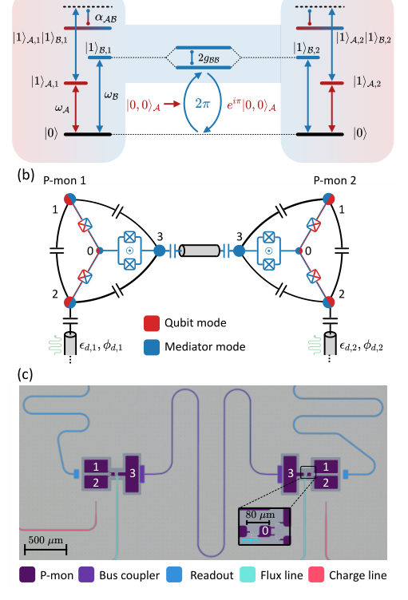
<figcaption class="paper-figure-caption"><b>Fig 1.</b> FIG. 1. (a) Energy level diagram of two P-mon qubits coupled via mediator modes. ωA and ωB are the transition frequen- cies for single excitation states |1⟩A,1 ≡|1, 0⟩A ⊗|0, 0⟩B and |1⟩B,1 ≡|0, 0⟩A ⊗|1, 0⟩B of modes A and B of P-mon 1 (and similarly |1⟩A,2 and |1⟩B,2 denote the excitation states of P- mon 2). The cross-Kerr interaction αAB shifts the energy of the joint excitation state |1⟩A,1|1⟩B,1 ≡|1, 0⟩A ⊗|1, 0⟩B. The spectrum of the coupled mediators (coupling strength gBB) is sketched for the qubit modes ground state |0, 0⟩A; a selective cyclic evolution on this state yields a geometric phase of π. (b) Circuit diagram of two coupled P-mon circuits. Each four- island P-mon is connected...</figcaption>
</figure>
<figure class="paper-figure-card">
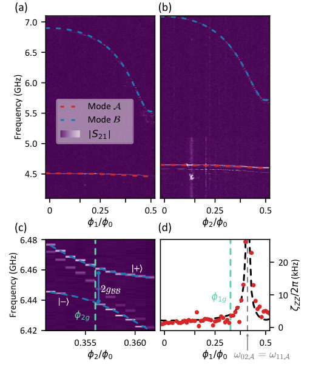
<figcaption class="paper-figure-caption"><b>Fig 2.</b> FIG. 2. Spectrum of P-mon P1 (a) and P2 (b) vs. ap- plied magnetic flux ϕ1/2/ϕ0. (c) Mediator spectrum of P2 vs applied flux ϕ2/ϕ0 with P1 parked at the gate opera- tion point ϕ1g, showing the avoided crossing between the mediator modes of P1 and P2. The blue dashed line indi- cates a fit with the upper and lower branch labeled by the states |+⟩and |−⟩, yielding a mediator-mediator coupling gBB/2π = 11.7(2) MHz. The dashed green line indicates the gate operation point ϕ2g. (d) ZZ interaction ζZZ be- tween the qubit modes of P1 and P2 in dependence of ϕ1/ϕ0 with P2 parked at the gate operation point ϕ2g. Error bars are smaller than the data points. The dashed black line is a fit to Eq. (4),...</figcaption>
</figure>
<figure class="paper-figure-card">
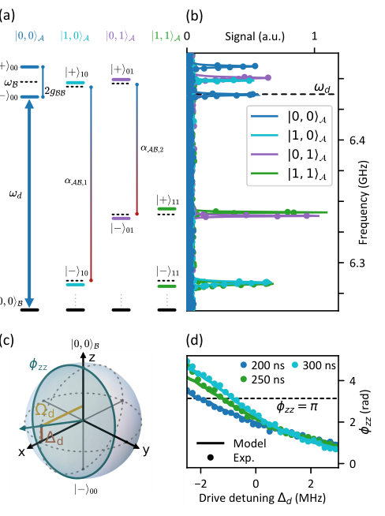
<figcaption class="paper-figure-caption"><b>Fig 3.</b> FIG. 3. (a) Energy levels of coupled mediator modes de- pending on the qubit states |i, j⟩A. Dashed horizontal lines indicate bare mediator energy levels in the absence of cou- pling gBB (blue dot-ended arrow); these are shifted by cross- Kerr interactions αAB,1/2 (blue/red dot-ended arrows). The blue arrow marks the target transition |0, 0⟩B ↔|−⟩00 for the gate. (b) Two-tone spectroscopy of the mediator spectrum for different initial qubit states |i, j⟩A, where the dashed line indicates the drive frequency ωd used for the CPHASE gate. (c) Bloch sphere of the {|00⟩B, |−⟩00} subspace. The green area indicates the cyclic trajectory yielding a geometric phase ϕZZ, determined by the drive...</figcaption>
</figure>
<figure class="paper-figure-card">
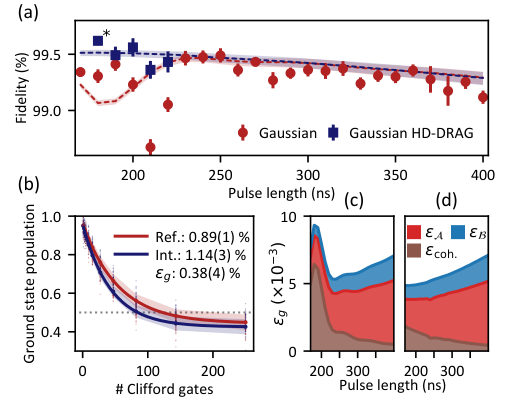
<figcaption class="paper-figure-caption"><b>Fig 4.</b> FIG. 4. (a) Gate fidelity vs. pulse length for Gaussian and HD-DRAG pulses. Dashed lines denote mean simulated fi- delity, shaded regions represent simulated fidelity bounds de- rived from the standard deviation of time-averaged coherence times. (b) Interleaved randomized benchmarking correspond- ing to the data point marked by (*) in (a). The grey dashed line indicates 0.5 ground state population. (c) Simulated error budget for Gaussian pulses vs pulse length. The different col- ors indicate coherent errors ϵcoh. (brown), qubit mode decay and dephasing εA (red) and mediator mode decay εB (blue). (d) Simulated error budget for Gaussian HD-DRAG pulses.</figcaption>
</figure>
<figure class="paper-figure-card">
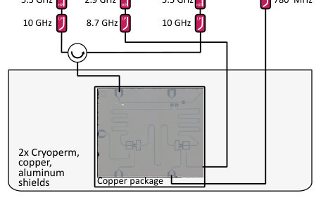
<figcaption class="paper-figure-caption"><b>Fig 5.</b> FIG. 5. Wiring diagram of the experimental setup.</figcaption>
</figure>
</div>

<p><strong>Summary.</strong> This paper details the implementation of a high-fidelity two-qubit CZ gate using novel P-mon superconducting qubits. By leveraging mediator modes and cross-Kerr interactions, they achieve robust coupling while suppressing unwanted crosstalk. The use of advanced pulse shaping techniques like HD-DRAG is crucial for reaching state-of-the-art gate fidelities necessary for scalable quantum computation.</p>
<p><strong>Why it may be interesting.</strong> The work provides a detailed blueprint for engineering coherent quantum gates in solid-state superconducting circuits by exploiting engineered multimode physics, which is highly relevant to open quantum systems research.</p>
<details>
<summary>Detailed structure</summary>
<p><strong>Main problem.</strong> The core challenge is developing scalable superconducting quantum processors by engineering qubit interactions that suppress decoherence channels, particularly unwanted ZZ-type coupling.</p>
<p><strong>Main result.</strong> The authors successfully implemented a high-fidelity CZ gate (99.62% fidelity) using P-mon qubits coupled via mediator modes, demonstrating a path toward scalable architecture.</p>
<p><strong>Method.</strong> Gate performance was optimized by comparing pulse shaping techniques (Gaussian vs. HD-DRAG) and analyzing the system dynamics using Lindblad master equations to minimize coherent errors.</p>
<p><strong>Model / system.</strong> The physical platform is superconducting P-mon qubits, which are multimode circuits featuring protected qubit modes coupled via flux-tunable mediator modes and a bus resonator. The Hamiltonian describes these interactions, allowing for controlled coupling via cross-Kerr effects.</p>
<p><strong>Key observables.</strong> CZ gate fidelity (99.62%), residual ZZ interaction strength (&lt; 3.6 kHz), single-qubit fidelities ($\approx 99.97\%$), and the accumulated entangling phase $\phi_{ZZ}$.</p>
<p><strong>Important parameters / regimes.</strong> Gate time (180 ns), drive detuning ($\Delta d$), mediator coupling strengths ($g_{BB}$), and coherence times ($T_1, T_2$).</p>
<p><strong>Assumptions / limitations.</strong> The analysis assumes the dispersive limit for initial derivations and relies on advanced pulse shaping (HD-DRAG) to mitigate coherent errors arising from spectral overlap.</p>
<p><strong>Figures summary.</strong> Figures illustrate energy level diagrams showing cross-Kerr shifts, circuit schematics of coupled P-mons, and comparisons of gate fidelity versus pulse length using both Gaussian and HD-DRAG pulses.</p>
<p><strong>Paper structure.</strong> The paper progresses by first establishing the protected nature of the P-mon qubit, then detailing how mediator modes enable controlled coupling. It moves through Hamiltonian derivation, experimental characterization (measuring couplings), and finally focuses on optimizing gate fidelity using advanced pulse shaping techniques like HD-DRAG.</p>
</details>
<details>
<summary>Abstract</summary>
<p>To scale superconducting quantum processors, it is essential to achieve long coherence times while engineering interactions that do not introduce additional decoherence channels. In superconducting qubit systems, this can be realized using multimode circuits that feature a protected qubit mode alongside a distinct mediator mode. Building on this concept, our recently developed P-mon qubit provides intrinsic protection against decoherence from the readout environment. We extend this approach to controlled two-qubit interactions, by exploiting the mediator modes of P-mons for on-demand coupling. Because direct interactions between the qubit modes are strongly suppressed, unwanted $ZZ$-type interactions are significantly reduced to below $3.6(5)~\text{kHz}$ in the idle state. When tuning the coupled mediator modes on resonance, the cross-Kerr interaction between the qubit and the hybridized mediator modes leads to a qubit-state dependent frequency shift. By selectively addressing these transitions, we implement a $180~\text{ns}$ long CZ gate and determine a fidelity of $99.62(4)~\text{%}$. These results represent a significant step toward a scalable superconducting architecture that maintains high performance at scale.</p>
</details>
<p><sub><a href="#top">↑ back to top</a></sub></p>

<p><a id="paper-2606.24681"></a></p>
<h3 id="a-universal-all-fiber-quantum-buffer-for-the-telecom-band"><a href="http://arxiv.org/abs/2606.24681v1">A Universal All-Fiber Quantum Buffer for the Telecom Band</a></h3>
<p><strong>Authors:</strong> Domenico Compagnini, Noemi Tagliavacche, Sara Congia, Andrea Bernardi, Marco Liscidini, Matteo Galli, Daniele Bajoni<br>
<strong>Type:</strong> experiment · <strong>Category:</strong> quantum information and computing · <strong>PDF:</strong> <a href="https://arxiv.org/pdf/2606.24681v1">https://arxiv.org/pdf/2606.24681v1</a><br>
<strong>Analysis basis:</strong> full PDF text, analyzed in chunks
<strong>Topic relevance:</strong> 🔥 <code>QC/QI experiment</code> <strong>4/5</strong> · <code>quantum optics experiment</code> <strong>3/5</strong> · <code>analog quantum simulation</code> <strong>1/5</strong> · <code>driven-dissipative phase transition</code> <strong>1/5</strong> · <code>interference shaping light</code> <strong>1/5</strong></p>
<div class="figure-strip-hint">↔ Scroll figures horizontally</div>
<div class="paper-figures-scroll">
<figure class="paper-figure-card">
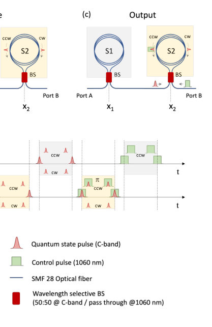
<figcaption class="paper-figure-caption"><b>Fig 1.</b> Figure 1: Architecture and operational principle of the universal all-fiber quantum buffer. (a) Input operation: an incoming quantum signal pulse and a control laser pulse enter the buffer constituted by Sagnac interferometers S1 and S2 through port A and port B, respectively. The beam-splitters (BS) at positions x1 and x2 divide the quantum pulse equally but do not split the control pulse which propagates only in the counterclockwise (CCW) direction. The pulses are precisely timed to overlap at the BS at x1. The CCW component of the quantum pulse co-propagates with the control pulse in S1, acquiring a nonlinear phase shift of 𝜋via cross- phase modulation. The subsequent constructive...</figcaption>
</figure>
<figure class="paper-figure-card">
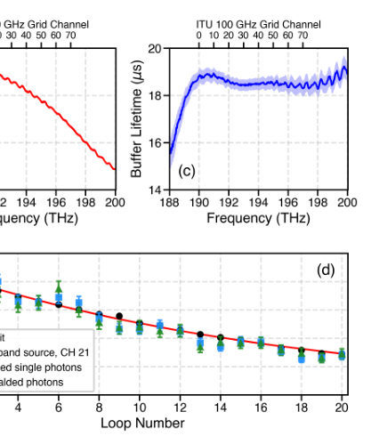
<figcaption class="paper-figure-caption"><b>Fig 2.</b> Figure 2: Linear characterization of the quantum buffer. (a) Measured transmission (color scale) as a function of optical frequency and loop number during extraction, obtained using a broadband light source. (b) Extracted buffer efficiency and (c) buffer lifetime as a function of optical frequency, derived from the dataset in panel (a). (d) Measured transmission for ITU channel 21 as a function of the loop number, comparing data from the broadband source, heralded single photons, and unheralded single photons. The solid line represents an exponential fit to the data.</figcaption>
</figure>
<figure class="paper-figure-card">
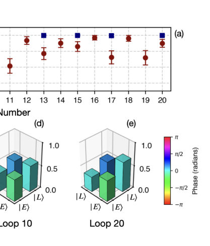
<figcaption class="paper-figure-caption"><b>Fig 3.</b> Figure 3: Preservation of time-bin encoded photons. (a) Measured fidelity to the initial state as a function of storage loop number (from 1 to 20) for an arbitrary time-bin input state (red dots) and a self-referenced |+⟩state (blue dots). (b)-(e) Reconstructed density matrices obtained via quantum state tomography for the initial input state (b), and the retrieved states from the buffer output after 1 (c), 10 (d), and 20 (e) storage loops.</figcaption>
</figure>
<figure class="paper-figure-card">
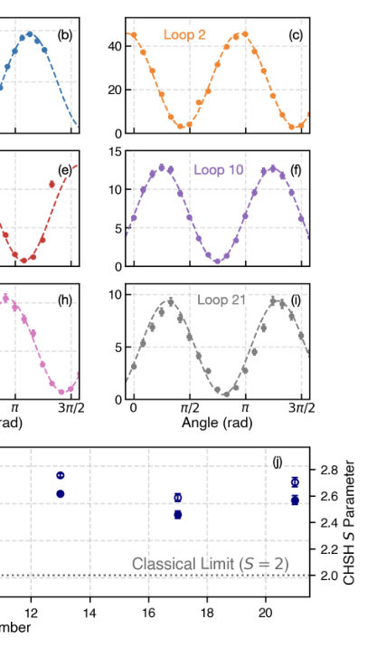
<figcaption class="paper-figure-caption"><b>Fig 4.</b> Figure 4: Time-bin entanglement. Measured quantum interference curves (without accidental subtraction) obtained after sending the signal photon through the fiber bypass (a) and through the quantum buffer for several loops (b) - (i). Dashed lines represent best fits to the experimental data. (j) Visibility and S parameter extracted from the best fits of panels (a) to (i): raw data (solid points) and corrected for the visibility of the analyzing interferometer (open points).</figcaption>
</figure>
<figure class="paper-figure-card">
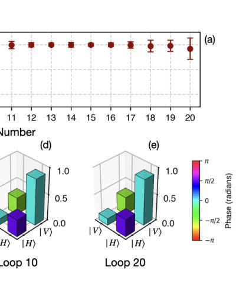
<figcaption class="paper-figure-caption"><b>Fig 5.</b> Figure 5: Preservation of polarization encoded photons. (a) Measured fidelity to the initial state as a function of storage loop number (from 1 to 20) for an arbitrary polarization input state. (b)-(e) Reconstructed density matrices obtained via quantum state tomography for the initial input state (b), and the retrieved states from the buffer output after 1 (c), 10 (d), and 20 (e) storage loops.</figcaption>
</figure>
</div>

<p><strong>Summary.</strong> The paper presents a novel, fully fiber-integrated quantum buffer capable of storing and retrieving quantum states across the entire telecom C-band. By utilizing Cross-Phase Modulation in a dual-Sagnac cavity, it overcomes major trade-offs associated with existing memory technologies. This robust platform enables high-rate synchronization for global photonic quantum networks.</p>
<p><strong>Why it may be interesting.</strong> This work provides an all-optical, room-temperature solution for quantum memory that directly addresses the bandwidth/storage trade-off, which is critical for scaling photonic quantum networks beyond current limitations.</p>
<details>
<summary>Detailed structure</summary>
<p><strong>Main problem.</strong> The realization of a scalable quantum internet requires on-demand, high-fidelity buffering of asynchronous photonic signals across the telecom band.</p>
<p><strong>Main result.</strong> The authors demonstrated a universal, fully fiber-integrated quantum buffer achieving ultra-low loss (0.46 dB), long storage times ($\sim 18 \mu$s), and broadband operation ($>12.5$ THz).</p>
<p><strong>Method.</strong> The system uses an actively switched dual-Sagnac cavity driven by Cross-Phase Modulation (XPM) to store quantum states encoded in time-bin, frequency-bin, or polarization degrees of freedom.</p>
<p><strong>Model / system.</strong> The platform is based on two Sagnac interferometers integrated into optical fiber. Storage relies on the $\chi^{(3)}$ nonlinearity inducing a phase shift via XPM from an intense control pulse onto the quantum signal pulse.</p>
<p><strong>Key observables.</strong> Input/output loss (0.46 dB), storage time ($\sim 18 \mu$s), operational bandwidth ($>12.5$ THz), and state fidelity ($>95\%$).</p>
<p><strong>Important parameters / regimes.</strong> Storage lifetime, Time-Bandwidth Product ($2.2 	imes 10^8$), and the ability to address multiple temporal modes (e.g., 200+).</p>
<p><strong>Assumptions / limitations.</strong> The system relies on the wavelength-dependent behavior of the beamsplitters and assumes that XPM provides sufficient switching contrast.</p>
<p><strong>Figures summary.</strong> Figures illustrate the working principle using Sagnac interferometers, show time-bin entanglement interference patterns (CHSH violation), and demonstrate selective input/delayed retrieval of multiple temporal modes.</p>
<p><strong>Paper structure.</strong> The paper progresses from establishing the need for quantum buffering to detailing the XPM mechanism in a dual-Sagnac setup. It then rigorously characterizes performance metrics—loss, storage time, and fidelity—before demonstrating advanced capabilities like multi-DoF preservation and high-density temporal multiplexing.</p>
</details>
<details>
<summary>Abstract</summary>
<p>The realization of a scalable quantum internet relies on the ability to temporally align asynchronous photonic signals through on-demand buffering. While matter-based quantum memories achieve long storage times, their extremely narrow bandwidths and cryogenic requirements pose significant barriers to integration with existing telecommunications infrastructure. Conversely, current all-optical memories operate at room temperature but are hampered by high input/output losses and a lack of universality across different photonic degrees of freedom. Here, we demonstrate a universal, fully fiber-integrated quantum buffer operating over the full telecom C-band that overcomes these fundamental trade-offs. By implementing an actively switched dual-Sagnac cavity driven by cross-phase modulation, we achieve an ultra-low input/output loss of 0.46 dB and a storage time exceeding 18 $μ$s. The device exhibits an operational bandwidth exceeding 12.5 THz ($\sim$100 nm), covering the full telecom C-band. We show the simultaneous buffering of over 200 temporal modes with the ability to address them either collectively or one by one. We demonstrate high-fidelity storage for all three degrees of freedom compatible with optical fiber propagation, namely time-bin, frequency-bin, and polarization qubits, along with faithful preservation of entanglement, confirming the platform's true universality. These results provide a robust, room-temperature solution for the high-rate synchronization of multidimensional quantum states, clearing a major hurdle for the deployment of global photonic quantum networks.</p>
</details>
<p><sub><a href="#top">↑ back to top</a></sub></p>

<p><a id="paper-2606.24312"></a></p>
<h3 id="universal-extraction-of-quantum-critical-exponents-and-phase-transitions-via-tailored-hilbert-space"><a href="http://arxiv.org/abs/2606.24312v1">Universal Extraction of Quantum Critical Exponents and Phase Transitions via Tailored Hilbert Space</a></h3>
<p><strong>Authors:</strong> Ye Xiong<br>
<strong>Type:</strong> theory · <strong>Category:</strong> statistical mechanics · <strong>PDF:</strong> <a href="https://arxiv.org/pdf/2606.24312v1">https://arxiv.org/pdf/2606.24312v1</a><br>
<strong>Analysis basis:</strong> full PDF text, analyzed in chunks
<strong>Topic relevance:</strong> 🔥 <code>analog quantum simulation</code> <strong>4/5</strong> · <code>non-equilibrium universality</code> <strong>2/5</strong> · <code>driven-dissipative phase transition</code> <strong>1/5</strong> · <code>entanglement &amp; information structure</code> <strong>1/5</strong> · <code>exotic spin models in light-matter</code> <strong>1/5</strong> · <code>non-equilibrium dynamics</code> <strong>1/5</strong></p>
<div class="figure-strip-hint">↔ Scroll figures horizontally</div>
<div class="paper-figures-scroll">
<figure class="paper-figure-card">
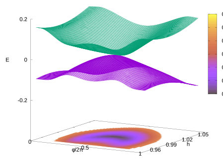
<figcaption class="paper-figure-caption"><b>Fig 1.</b> FIG. 1. Eigenenergies of the tailored Hamiltonian HW as functions of h and φ. The bottom palette illustrates the en- ergy gap between the two states. Calculations are performed at γ = 0.5 and fixed tailoring strength W1 = 105 throughout this work. Only low-energy states near zero energy are dis- played. A characteristic cone-shaped dispersion emerges near the critical point h = 1, clearly signaling the quantum critical behavior.</figcaption>
</figure>
<figure class="paper-figure-card">
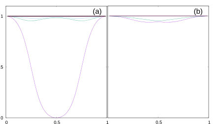
<figcaption class="paper-figure-caption"><b>Fig 2.</b> FIG. 2. Eigenvalues of the projection operator that maps low- energy eigenstates onto the subspace spanned by the φ = 0 lower-band states. Panels (a) and (b) correspond to h = 0.6 and h = 1.4, respectively.</figcaption>
</figure>
<figure class="paper-figure-card">
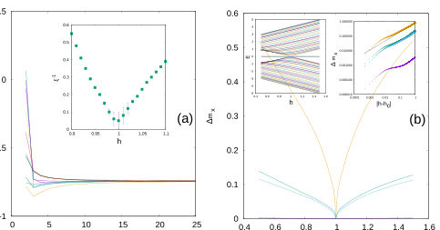
<figcaption class="paper-figure-caption"><b>Fig 3.</b> FIG. 3. (a) Site-resolved mz calculated in the THS for an ensemble of |Ψ1⟩on an N = 50 ring. All curves satu- rate to a constant via exponential decay. The inset displays correlation-length scaling ξ ∝|h −hc|−ν with ν = 1. (b) Left inset: THS energy spectrum hosting a zero-energy in- gap state. Main panel: Curves from bottom to top show the zero-energy contribution ∆mx at N = 100, 200, 400, 1000, whose scaling with system size N verifies the extended nature of this midgap state. Right inset: Double-logarithmic plot of ∆mx against h −hc, demonstrating the power-law behavior ∆mx ∝(h−hc)0.625. The solid line acts as a guide to the eye for the measured exponent.</figcaption>
</figure>
<figure class="paper-figure-card">
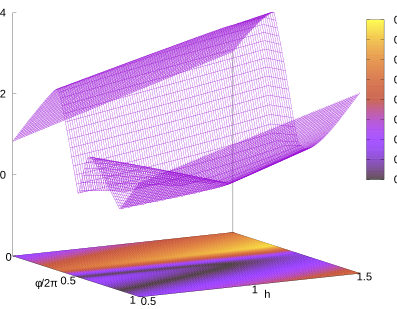
<figcaption class="paper-figure-caption"><b>Fig 4.</b> FIG. 4. The gap between the ground state and first excited state energies in THS.</figcaption>
</figure>
<figure class="paper-figure-card">
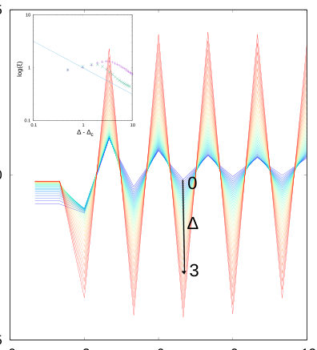
<figcaption class="paper-figure-caption"><b>Fig 5.</b> FIG. 5. Site-resolved mz versus lattice index i for an N = 12 open-boundary chain. ∆is taken from 0 to 3. The tailored state |Ψ1⟩is localized on the leftmost sites i = 1 and i = 2. The inset, arranged from top to bottom, presents the logarith- mic correlation length for system sizes N = 12 and N = 16, respectively. The solid line serves as a guide to the eye for the scaling behavior x−0.5.</figcaption>
</figure>
</div>

<p><strong>Summary.</strong> This work introduces Tailored Hilbert Space (THS), a novel theoretical framework to study quantum phase transitions by modifying the model's effective Hamiltonian. By tailoring the Hilbert space using specific reference states, the authors can extract precise critical exponents and correlation lengths for models like the XY and XXZ chains using extremely small lattices. This provides an efficient, universal route for characterizing QPTs in many-body systems.</p>
<p><strong>Why it may be interesting.</strong> For AMO physicists studying quantum phase transitions (e.g., in cold atom arrays or superconducting circuits), this offers a powerful computational tool that bypasses the need for large system sizes or complex finite-size extrapolations when characterizing critical behavior.</p>
<details>
<summary>Detailed structure</summary>
<p><strong>Main problem.</strong> The primary goal is to develop an efficient method to analyze quantum phase transitions (QPTs) and extract critical exponents, overcoming limitations associated with finite-size scaling.</p>
<p><strong>Main result.</strong> A novel Tailored Hilbert Space (THS) scheme successfully yields precise critical points and universal exponents for models like the 1D XY and XXZ chains using very small lattices. This method robustly characterizes QPTs across different universality classes.</p>
<p><strong>Method.</strong> The core technique involves modifying the system Hamiltonian by adding a projection term based on a tailored reference state $|\Psi_1
angle$, allowing probing of criticality without traditional finite-size scaling procedures.</p>
<p><strong>Model / system.</strong> The method is applied to quantum spin models, specifically the 1D XY model and the XXZ chain. The framework is generalizable to other many-body lattice systems exhibiting QPTs.</p>
<p><strong>Key observables.</strong> Critical exponents ($
u$, $eta$), critical points ($h_c$, $\Delta_c$), correlation lengths ($\xi$), local order parameters ($\hat{m}_{z,i}$), and topological invariants.</p>
<p><strong>Important parameters / regimes.</strong> System size (small lattices like N=12 to 50), magnetic field/coupling constants ($h$, $\phi$, $\Delta$).</p>
<p><strong>Assumptions / limitations.</strong> The method assumes that ground states belonging to distinct quantum phases occupy distinct, measurable regions within the tailored Hilbert space.</p>
<p><strong>Figures summary.</strong> Figures illustrate energy spectra showing conical band crossings at criticality (XY model), and plot correlation length scaling ($\xi \propto |h - h_c|^{-
u}$) for both XY and BKT transitions in the XXZ model.</p>
<p><strong>Paper structure.</strong> The paper introduces THS, applies it to the 1D XY model to find critical exponents, generalizes the technique to the Berezinskii-Kosterlitz-Thouless transition in the XXZ chain, and discusses its universal applicability across different QPT types.</p>
</details>
<details>
<summary>Abstract</summary>
<p>Finite-size scaling and the renormalization group form the central toolkit   for analyzing quantum phase transitions (QPTs). In this Letter, we introduce   a novel Hilbert-space tailoring scheme to probe quantum critical phenomena.   Applied to the second-order QPT of the one-dimensional (1D) XY model, our method   yields precise critical points and exponents on lattices containing merely 50   unit cells. We further establish the universal applicability of this   framework via investigations of the Berezinskii-Kosterlitz-Thouless   transition in the 1D XXZ chain: critical parameters are recovered   with as few as 12 lattice sites. This technique may open an alternative,   efficient route to universally characterize QPT across many-body lattice systems.</p>
</details>
<p><sub><a href="#top">↑ back to top</a></sub></p>

<p><a id="paper-2606.23958"></a></p>
<h3 id="dual-isotope-narrow-line-mot-of-dysprosium-by-phase-modulation"><a href="http://arxiv.org/abs/2606.23958v1">Dual-isotope narrow-line MOT of dysprosium by phase modulation</a></h3>
<p><strong>Authors:</strong> M. Dürbeck, L. Reihs, J. Seifert, B. Choudhari, J. P. Marulanda-Serna, N. Werum, M. De Pas, G. Meijer, G. Valtolina<br>
<strong>Type:</strong> experiment · <strong>Category:</strong> other · <strong>PDF:</strong> <a href="https://arxiv.org/pdf/2606.23958v1">https://arxiv.org/pdf/2606.23958v1</a><br>
<strong>Analysis basis:</strong> full PDF text, analyzed in chunks
<strong>Topic relevance:</strong> 🔥 <code>analog quantum simulation</code> <strong>4/5</strong> · <code>quantum optics experiment</code> <strong>2/5</strong> · <code>QC/QI experiment</code> <strong>1/5</strong> · <code>driven-dissipative phase transition</code> <strong>1/5</strong> · <code>interference shaping light</code> <strong>1/5</strong></p>
<div class="figure-strip-hint">↔ Scroll figures horizontally</div>
<div class="paper-figures-scroll">
<figure class="paper-figure-card">
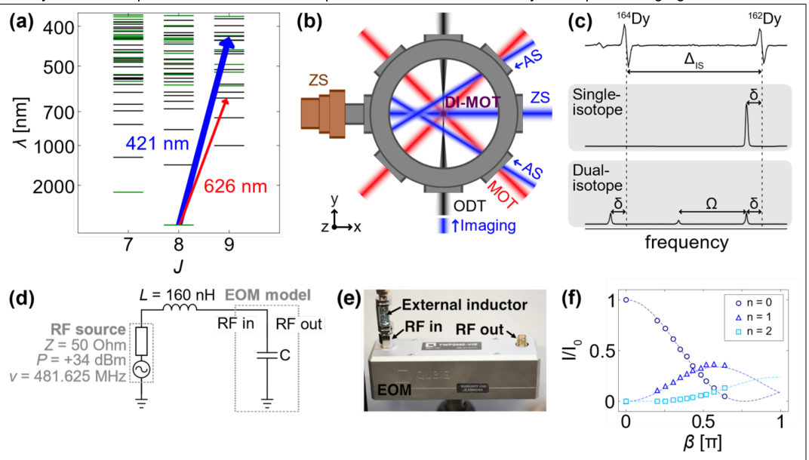
<figcaption class="paper-figure-caption"><b>Fig 1.</b> Figure 1. a) Dy simplified electronic structure and relevant laser cooling transitions at 421 nm (blue arrow) and 626 nm (red arrow). b) Top view of the science chamber with relevant slowing and trapping laser beams. c) Top: Doppler-free spectroscopy of Dy on the 626-nm transition. Centre: Cavity spectrum of the 626-nm laser in single-isotope operation. The laser frequency is chosen to be red-detuned from the resonance by a frequency 𝛿. Bottom: Cavity-spectrum of the 626-nm laser in dual-isotope operation. Phase modulation in an EOM creates frequency sidebands separated by the drive frequency 𝛺. Here, we choose 𝛺=</figcaption>
</figure>
<figure class="paper-figure-card">
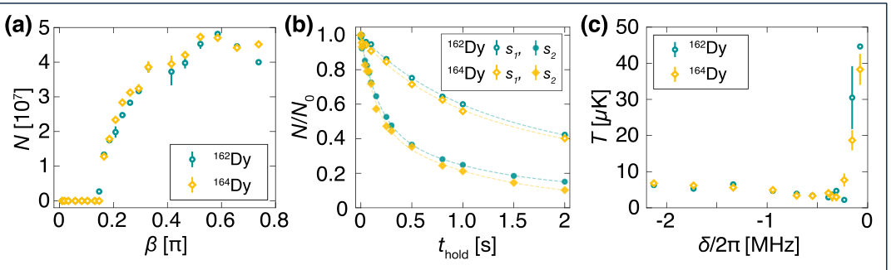
<figcaption class="paper-figure-caption"><b>Fig 2.</b> Figure 2. Properties of the single-isotope sideband-MOT. a) Number of trapped atoms 𝑁 in the sideband MOT as a function of 𝛽 at fixed optical power for 162Dy (green) and 164Dy (yellow). b) Evolution of 𝑁 normalised to initial atom number 𝑁0 = 5 ⋅107 at different hold times 𝑡ℎ𝑜𝑙𝑑 in the compressed sideband-MOT for 162Dy (green) and 164Dy (yellow) at a detuning</figcaption>
</figure>
<figure class="paper-figure-card">
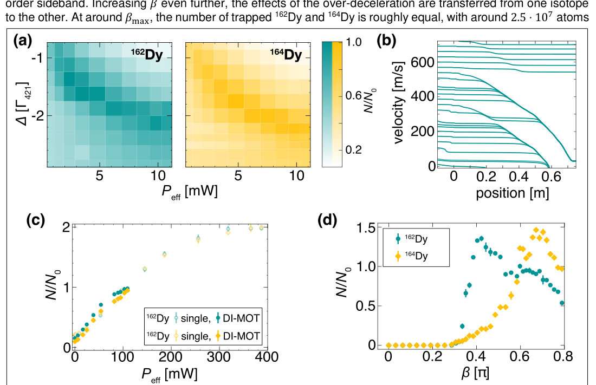
<figcaption class="paper-figure-caption"><b>Fig 3.</b> Figure 3. Characterisation of the DI-MOT. a) Relative atom number 𝑁/𝑁0 in the DI-MOT for both 162Dy (green) and 164Dy (yellow) as a function of AS power and detuning. 𝑁0 = 2.5 ⋅107 for both isotopes. b) Numerical simulation of the ZS dynamics of 164Dy for different velocity classes at 𝛽= 0.5𝜋. c) Atom number 𝑁 as a function of effective TC power for single-isotope (hollow) and dual-isotope (solid), d) 𝑁 as a function of 𝛽 of the 421-nm EOM.</figcaption>
</figure>
<figure class="paper-figure-card">
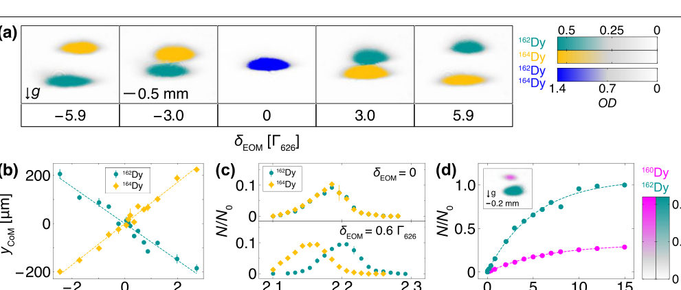
<figcaption class="paper-figure-caption"><b>Fig 4.</b> Figure 4. a) Optical density (OD) images showing equilibrium positions at different EOM detuning 𝛿𝐸𝑂𝑀= 𝛺−</figcaption>
</figure>
</div>

<p><strong>Summary.</strong> The research reports on a novel dual-isotope MOT technique for dysprosium using phase modulation via Electro-Optic Modulators. By precisely tuning the EOM drive frequency, the authors achieve simultaneous and controllable trapping of different isotopes in a narrow-line regime. This method provides a highly efficient and versatile tool for studying mixtures of atomic species.</p>
<p><strong>Why it may be interesting.</strong> This work showcases advanced optical techniques (EOM phase modulation) applied to cold atoms for precise isotopic control, which is crucial for quantum simulation platforms requiring multiple atomic species.</p>
<details>
<summary>Detailed structure</summary>
<p><strong>Main problem.</strong> The primary goal is characterizing a narrow-line Magneto-Optical Trap (MOT) capable of simultaneously loading and trapping two different isotopes of dysprosium using phase modulation.</p>
<p><strong>Main result.</strong> The authors demonstrated full control over the isotopic mixture in the MOT by tuning the Electro-Optic Modulator (EOM) drive frequency, offering a cost-effective method for controlling mixtures of atomic species.</p>
<p><strong>Method.</strong> They utilized high-power, free-space EOMs to generate optical sidebands at detunings specific to two different isotopes, enabling simultaneous trapping on narrow transitions.</p>
<p><strong>Model / system.</strong> The experiment uses Dysprosium (Dy) atoms, specifically targeting bosonic isotope mixtures like ${}^{164}	ext{Dy} - {}^{162}	ext{Dy}$ and ${}^{162}	ext{Dy} - {}^{160}	ext{Dy}$. Trapping occurs on narrow-line transitions at 626 nm, preceded by cooling at 421 nm.</p>
<p><strong>Key observables.</strong> Trapped atom number ($N$), center-of-mass (CoM) shift, and the relative population imbalance between isotopes.</p>
<p><strong>Important parameters / regimes.</strong> Isotope shift ($\Delta I_S \approx 962 	ext{ MHz}$), EOM drive frequency ($\Omega = \Delta I_S / 2$), and modulation depth ($eta$).</p>
<p><strong>Assumptions / limitations.</strong> The technique relies on using non-resonant EOMs with external electronics to overcome bandwidth limitations inherent in built-in LC circuits.</p>
<p><strong>Figures summary.</strong> Figures illustrate the electronic structure, the setup geometry, and show how the EOM drive frequency controls the isotopic mixture and causes measurable spatial displacements of the two isotope clouds along the gravity axis.</p>
<p><strong>Paper structure.</strong> The paper details the development of a dual-isotope MOT using sidebands from EOMs. It characterizes performance by measuring atom numbers vs. modulation depth, demonstrating control over the relative population imbalance, and mapping CoM shifts to measure $\Delta I_S$.</p>
</details>
<details>
<summary>Abstract</summary>
<p>We report on the characterization of a narrow-line magneto-optical trap (MOT), where two different isotopes of the dysprosium (Dy) atom can be simultaneously loaded and trapped. We rely on phase modulation via high-power, free-space electro-optic modulators (EOMs) to generate optical sidebands at the correct detuning for two different isotopes. This technique is applied on the slowing transition at 421 nm and the MOT transition at 626 nm. Using modular resonant electronic circuits, we match the sideband separation to the isotope shift among the two target isotopes, realizing mixtures of the bosonic isotopes 164Dy -162Dy and 162Dy -160Dy. We exploit the interplay between radiation forces and gravity in the narrow-line MOT to control the spatial position of the two isotopes with the EOM drive frequency. We demonstrate full control of the isotopic mixture with the EOM drive, offering new and cost-effective capabilities for controlling mixtures of atomic species that can be trapped in a narrow-line MOT.</p>
</details>
<p><sub><a href="#top">↑ back to top</a></sub></p>

<p><a id="paper-2606.23836"></a></p>
<h3 id="mode-selective-nonlinear-interference-for-high-brightness-and-high-purity-fiber-coupled-spdc-sources"><a href="http://arxiv.org/abs/2606.23836v1">Mode-selective nonlinear interference for high-brightness and high-purity fiber-coupled SPDC sources</a></h3>
<p><strong>Authors:</strong> Carlos Sevilla-Gutiérrez, Purujit Singh Chauhan, Varun Raj Kaipalath, Fabian Steinlechner<br>
<strong>Type:</strong> both · <strong>Category:</strong> other · <strong>PDF:</strong> <a href="https://arxiv.org/pdf/2606.23836v1">https://arxiv.org/pdf/2606.23836v1</a><br>
<strong>Analysis basis:</strong> full PDF text, analyzed in chunks
<strong>Topic relevance:</strong> 🔥 <code>interference shaping light</code> <strong>4/5</strong> · 🔥 <code>quantum optics experiment</code> <strong>4/5</strong></p>
<div class="figure-strip-hint">↔ Scroll figures horizontally</div>
<div class="paper-figures-scroll">
<figure class="paper-figure-card">
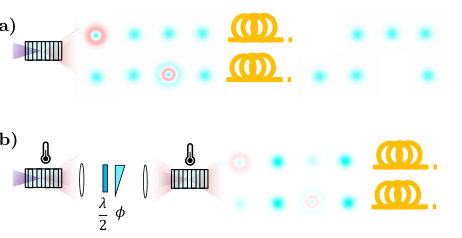
<figcaption class="paper-figure-caption"><b>Fig 1.</b> FIG. 1. (a) Conceptual illustration of the limitation of heralding efficiency in bulk SPDC with single-mode-fiber cou- pling: photon pairs emitted into mismatched spatial modes reduce the coincidence-to-singles ratio. (b) Schematic of the two-crystal configuration with intermediate polarization ro- tation (λ/2) and relative phase control ϕ. The interference enhances generation into the joint Gaussian mode while par- tially suppressing higher-order mode contributions, resulting in increased brightness and heralding efficiency.</figcaption>
</figure>
<figure class="paper-figure-card">
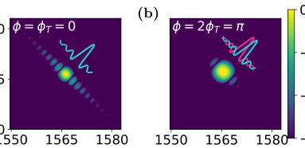
<figcaption class="paper-figure-caption"><b>Fig 2.</b> FIG. 3. (a) Joint spectral intensity (|JSA|2) for the zero- detuning configuration, ϕ = ϕT = 0, and (b) for the detuned configuration, ϕ = 2ϕT = π. The latter exhibits strong side- lobe suppression, increasing the spectral purity from ≈0.81 to ≈0.98.</figcaption>
</figure>
<figure class="paper-figure-card">
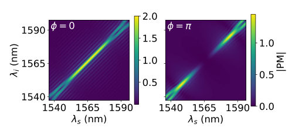
<figcaption class="paper-figure-caption"><b>Fig 3.</b> FIG. 2. Effective phase matching under the plane-wave ap- proximation for constructive interference (ϕ = 0) (left) and destructive interference (ϕ = π) (right). The plots show that the interference range is limited by higher-order dispersion terms.</figcaption>
</figure>
<figure class="paper-figure-card">

<figcaption class="paper-figure-caption"><b>Fig 4.</b> FIG. 4. Relative brightness (left) and heralding efficiency (right) for the (a) single-crystal configuration and the two-crystal configuration with phase-mismatch settings (b) ϕT and (c) ϕ′ T . (d),(e) Spectral amplitudes for the joint spatial modes ps = pi = 0 (top) and ps = 0, pi = 1 (bottom) at the operating points marked in green and magenta in (b) and (c), respectively. Blue and yellow lines denote the contribution from each crystal, and the green curve the effective spectral amplitude after nonlinear interference. The interference enhances the Gaussian mode while partially suppressing higher-order contributions, improving the brightness–heralding-efficiency trade-off. In (e), sidelobe...</figcaption>
</figure>
<figure class="paper-figure-card">

<figcaption class="paper-figure-caption"><b>Fig 5.</b> FIG. 5. (a) Maximum heralding efficiency as a function of rel- ative brightness for the two-crystal (blue solid line) and single- crystal (blue dashed line) configurations, showing an improve- ment of more than one order of magnitude in the brightness– heralding-efficiency trade-off. The orange lines show the spec- tral purity of the corresponding optimized configurations for the two-crystal (solid line) and single-crystal (dashed line) ar- chitectures, indicating that high spectral purity can also be achieved in the tight-focusing regime. (b) Same analysis for the case of aperiodic poling with Gaussian phase matching, showing a similar improvement in the trade-off. In this case, the...</figcaption>
</figure>
</div>

<p><strong>Summary.</strong> This paper presents a method to drastically improve the performance of fiber-coupled SPDC sources by exploiting mode-selective nonlinear interference in a cascaded two-crystal setup. The technique overcomes inherent trade-offs between brightness and heralding efficiency by more than an order of magnitude. Both theoretical modeling using Laguerre-Gauss modes and experimental validation via SFG confirm that this architecture enables high-purity, high-brightness quantum light sources.</p>
<p><strong>Why it may be interesting.</strong> This work is highly relevant as it pushes the boundaries of quantum light sources by engineering complex spatio-spectral correlations through nonlinear optics, which has direct implications for quantum communication protocols.</p>
<details>
<summary>Detailed structure</summary>
<p><strong>Main problem.</strong> The primary challenge is overcoming intrinsic trade-offs (brightness vs. heralding efficiency vs. spectral purity) in single-mode-fiber-coupled Spontaneous Parametric Down-Conversion (SPDC) sources.</p>
<p><strong>Main result.</strong> By utilizing nonlinear interference in a cascaded two-crystal setup, the authors demonstrate an improvement of over one order of magnitude in the brightness–heralding efficiency trade-off while maintaining near-unity spectral purity.</p>
<p><strong>Method.</strong> The study combines theoretical modeling using spectrally resolved Laguerre–Gauss modal decomposition with experimental validation via Sum-Frequency Generation (SFG) measurements.</p>
<p><strong>Model / system.</strong> The system is a cascaded two-crystal type-II SPDC source. The analysis models the process by incorporating nonlinear interference effects across both spectral and spatial degrees of freedom using Laguerre-Gauss modal bases.</p>
<p><strong>Key observables.</strong> Pair-collection probability (Brightness), Heralding efficiency, Spectral purity ($P$), Joint Spectral Amplitude (JSA).</p>
<p><strong>Important parameters / regimes.</strong> The improvement factor is $>10$-fold; high heralding efficiency ($H \geq 0.97$) and spectral purity ($P > 0.99$) are key targets.</p>
<p><strong>Assumptions / limitations.</strong> Initial analysis uses the plane-wave approximation, but results extend to complex spatial modes using LG decomposition; the enhancement relies on dispersion compensation in the cascaded structure.</p>
<p><strong>Figures summary.</strong> Figures illustrate the comparison between single-crystal and two-crystal PMFs, showing interference effects that suppress sidelobes and enhance performance. Experimental setup diagrams detail the use of tunable lasers and nonlinear crystals for measurement.</p>
<p><strong>Paper structure.</strong> The paper progresses from identifying the fundamental trade-off in SPDC sources to developing a theoretical model based on nonlinear interference in cascaded systems. It then quantifies the improvement over single-crystal limits, discusses spectral/spatial mode decomposition, and concludes with experimental validation using SFG measurements.</p>
</details>
<details>
<summary>Abstract</summary>
<p>Single-mode-fiber-coupled spontaneous parametric down-conversion (SPDC) sources are a key resource for photonic quantum technologies, but in single-crystal geometries brightness, heralding efficiency, and spectral purity remain constrained by intrinsic trade-offs. Here, we show how nonlinear interference in a cascaded two-crystal type-II SPDC source can be used to engineer the modal structure of SPDC emission, improving the brightness--heralding-efficiency trade-off by more than one order of magnitude beyond the single-crystal limit. We further demonstrate two routes to near-unity spectral purity while retaining high brightness and/or heralding efficiency, even with standard periodically poled crystals, and study the additional advantages of aperiodic poling with Gaussian phase matching. Using a spectrally resolved Laguerre--Gauss modal decomposition, we show that these improvements arise from mode-selective interference of spatial-spectral SPDC modes within the nonlinear interferometer. We experimentally validate the model through sum-frequency-generation measurements of the spatial-spectral state.</p>
</details>
<p><sub><a href="#top">↑ back to top</a></sub></p>

<p><a id="paper-2606.24755"></a></p>
<h3 id="on-degeneracies-of-density-magnetic-and-pairing-responses-how-competing-orders-echo-underlying-symmetries-in-the-hubbard-model"><a href="http://arxiv.org/abs/2606.24755v1">On Degeneracies of Density, Magnetic, and Pairing Responses: How Competing Orders Echo Underlying Symmetries in the Hubbard Model</a></h3>
<p><strong>Authors:</strong> Michael Meixner, Herbert Eßl, Matthias Reitner, Alessandro Toschi, Thomas Schäfer<br>
<strong>Type:</strong> theory · <strong>Category:</strong> strongly correlated electrons · <strong>PDF:</strong> <a href="https://arxiv.org/pdf/2606.24755v1">https://arxiv.org/pdf/2606.24755v1</a><br>
<strong>Analysis basis:</strong> full PDF text, analyzed in chunks
<strong>Topic relevance:</strong> 🔥 <code>analog quantum simulation</code> <strong>4/5</strong> · <code>Keldysh / 2PI / non-Gaussian methods</code> <strong>1/5</strong> · <code>driven-dissipative phase transition</code> <strong>1/5</strong> · <code>entanglement &amp; information structure</code> <strong>1/5</strong> · <code>methods for driven-dissipative</code> <strong>1/5</strong></p>
<div class="figure-strip-hint">↔ Scroll figures horizontally</div>
<div class="paper-figures-scroll">
<figure class="paper-figure-card">

<figcaption class="paper-figure-caption"><b>Fig 1.</b> FIG. 1. Exact symmetry relations between pairing, charge and spin response functions with s, p, d, sext form-factors (columns) and exemplary transfer momenta qpp = −qph −π (rows) for square lattice models with SU(2)P -symmetry. The relations hold not only for the static case (ω = 0) but for all transfer-frequencies, with ωpp = −ωph and non-zero external magnetic field [41].</figcaption>
</figure>
<figure class="paper-figure-card">

<figcaption class="paper-figure-caption"><b>Fig 2.</b> FIG. 2. a) d-density wave χd−DW and d-wave superconductivity χd−SC susceptibilities over temperature in CDMFT, which show a concomitant divergence at Tc ≈0.0413t for U = 5.6t. b) Projection on the instability eigenvector V∞of the two terms of Eq. (A1): the d−SC generalized susceptibility of the impurity cluster (green circles) and corresponding inverse-bubble contributions −1/t2 eff (black bold line). The thermodynamic instability occurs at their intersection (red dot). c) Diagrams which are subtracted from the impurity response in b), see text: 1 ○the single boson exchange spin-transverse diagram sp of the generalized susceptibility, 2 ○the single-boson sp of the two-particle irreducible...</figcaption>
</figure>
<figure class="paper-figure-card">

<figcaption class="paper-figure-caption"><b>Fig 3.</b> FIG. 3. d-density wave χd−DW and d-wave superconductivity χd−SC susceptibilities over second-next neighbor hopping t′ at U = 5.6t and T = 0.0417t, slightly above Tc.</figcaption>
</figure>
</div>

<p><strong>Summary.</strong> This paper rigorously analyzes how charge, spin, and pairing instabilities are related by symmetry in the Hubbard model. It shows that these responses exhibit degeneracies due to pseudospin symmetry, confirming simultaneous CDW/SC instabilities numerically. The framework provides a powerful tool for understanding competing orders in strongly correlated materials.</p>
<p><strong>Why it may be interesting.</strong> While focused on Hubbard model physics, the rigorous mathematical framework linking multiple response functions through underlying symmetries provides a general tool for understanding correlated quantum matter, which is relevant to many-body dynamics in AMO systems.</p>
<details>
<summary>Detailed structure</summary>
<p><strong>Main problem.</strong> The study investigates degeneracies between charge, spin, and pairing susceptibilities that arise from underlying symmetries in strongly correlated electron systems.</p>
<p><strong>Main result.</strong> The analysis analytically derives mutual relations showing that these three response functions are degenerate for the unfrustrated Hubbard model, a degeneracy lifted by geometrical frustration or symmetry breaking ($t'$).</p>
<p><strong>Method.</strong> The work combines analytical derivations exploiting pseudospin symmetries (SU(2)P) with advanced numerical techniques like Cluster Dynamical Mean-Field Theory (CDMFT) and Bethe-Salpeter Equation (BSE) analysis.</p>
<p><strong>Model / system.</strong> The primary model is the Hubbard Hamiltonian, studied on a bipartite lattice. The analysis focuses on how competing orders—charge density waves (CDW), spin density waves (SDW), and superconductivity (SC)—interact through their respective susceptibilities.</p>
<p><strong>Key observables.</strong> Charge susceptibility ($\chi^{ch}$), spin susceptibility ($\chi^{sp}$), and pairing/superconducting susceptibility ($\chi^{pp}$) for various form factors (s, d, sext).</p>
<p><strong>Important parameters / regimes.</strong> The Hubbard interaction strength ($U$), hopping parameters ($t, t'$), doping levels, and momentum transfer vectors ($q_{ph}$).</p>
<p><strong>Assumptions / limitations.</strong> Initial analytical results are rigorously derived for the unfrustrated, bipartite Hubbard model; numerical extensions rely on approximations like CDMFT.</p>
<p><strong>Figures summary.</strong> Figures illustrate symmetry relations between response functions (Fig. 1), show concomitant divergences of d-wave CDW and SC susceptibilities at $T_c$ in CDMFT (Fig. 2a), and map out how introducing $t'$ gradually lifts these degeneracies (Fig. 3).</p>
<p><strong>Paper structure.</strong> The paper progresses from establishing exact symmetry relations using pseudospin symmetry, to demonstrating the degeneracy numerically via CDMFT simulations, and finally analyzing how breaking symmetries ($t'$) or moving beyond simple lattice limits affects this fundamental relationship.</p>
</details>
<details>
<summary>Abstract</summary>
<p>Strongly correlated electron systems often display competing or even intertwined ordering tendencies, hinting to extremely close or degenerate many-electron energies. While degeneracies are directly rooted in the underlying symmetries of the problem under investigation, their multifaceted effects on different response functions and their mutual relations often remain elusive. Here we put this subject on a rigorous basis by investigating the degeneracies of charge, spin, and pairing susceptibilities for the unfrustrated, bipartite Hubbard model. Exploiting its pseudospin symmetry, we analytically derive the mutual relations between these response functions for generic spatial modulations, highly relevant, e.g., for the competition of stripe and superconducting orders. By means of two-particle numerical simulations we demonstrate the occurrence of a simultaneous $d$-wave pairing/$d$-density wave (loop current) instability in the vicinity of the metal-insulator transition, driven by short-ranged spin fluctuations for the two-dimensional case. We show how this degeneracy is gradually lifted by geometrical frustration, which favors superconductivity. Our study provides a general tool for revealing symmetry relations in correlated electron systems and establishes a unifying perspective on the nature of their intermingled charge/loop current, pairing, and spin orders.</p>
</details>
<p><sub><a href="#top">↑ back to top</a></sub></p>

<p><a id="paper-2606.24469"></a></p>
<h3 id="when-to-skip-syndrome-extraction-in-surface-gkp-codes"><a href="http://arxiv.org/abs/2606.24469v1">When to Skip Syndrome Extraction in Surface-GKP Codes</a></h3>
<p><strong>Authors:</strong> Vaughn Sohn, Changhun Oh<br>
<strong>Type:</strong> theory · <strong>Category:</strong> quantum information and computing · <strong>PDF:</strong> <a href="https://arxiv.org/pdf/2606.24469v1">https://arxiv.org/pdf/2606.24469v1</a><br>
<strong>Analysis basis:</strong> full PDF text, analyzed in chunks
<strong>Topic relevance:</strong> 🔥 <code>quantum measurements</code> <strong>4/5</strong> · <code>measurement-induced transitions</code> <strong>3/5</strong> · <code>methods for driven-dissipative</code> <strong>1/5</strong></p>
<div class="figure-strip-hint">↔ Scroll figures horizontally</div>
<div class="paper-figures-scroll">
<figure class="paper-figure-card">

<figcaption class="paper-figure-caption"><b>Fig 1.</b> FIG. 1. Surface-GKP code architecture. (a) Mapping of GKP states onto the Bloch sphere. Each logical state is illustrated as a Wigner function in phase space. (b) Circuit descriptions for GKP stabilizer measurement. The measurement symbols q and p denote homodyne measurement of the position and momentum quadratures, respectively. The symbol ⊕denotes the SUM gate, ⊖denotes the inverse-SUM gate, and the filled circle indicates the control mode. (c) Distance-5 surface-GKP code. White nodes denote data qubits. Grey, red, and green nodes represent ancilla qubits for GKP, X-type, and Z-type stabilizer measurements, respectively. (d) Circuit descriptions for surface-GKP stabilizer measurement.</figcaption>
</figure>
<figure class="paper-figure-card">

<figcaption class="paper-figure-caption"><b>Fig 2.</b> FIG. 2. Conditional logical Pauli error probability for a GKP qubit given the measurement outcome r for a single quadrature. The solid line represents the conditional error probability Pr(E | r; σ), while the dashed line represents the unconditional error probability Pr(E; σ), which is independent of r.</figcaption>
</figure>
<figure class="paper-figure-card">

<figcaption class="paper-figure-caption"><b>Fig 3.</b> FIG. 3. Model of noisy syndrome extraction process as a Binary Symmetric Channel (BSC). The target syndrome difference A becomes the observed syndrome difference B with flip probability ϵ.</figcaption>
</figure>
<figure class="paper-figure-card">

<figcaption class="paper-figure-caption"><b>Fig 4.</b> FIG. 4. Overview of the adaptive measurement strategy. At each round t, GKP stabilizer measurements are always performed to correct small displacement errors and obtain analog information. The protocol then selects an action a = (aZ, aX), where aP determines whether the P-type surface-code stabilizers are measured or skipped. Measured components are obtained from surface-code stabilizer measurements, while skipped components reuse the previous syndrome value. The resulting syndrome history is then used for MWPM decoding after T rounds.</figcaption>
</figure>
<figure class="paper-figure-card">

<figcaption class="paper-figure-caption"><b>Fig 5.</b> FIG. 5. Decoding with skipped stabilizer measurements. When a round is skipped, the previous syndrome value is reused and no detection event is generated. The corresponding time-like edge, shown as the gray dashed line, is retained with weight w = 0, so paths such as (1) and (2) can pass through the skipped interval without additional penalty.</figcaption>
</figure>
</div>

<p><strong>Summary.</strong> This paper introduces an adaptive scheme for Quantum Error Correction on Surface-GKP codes designed to reduce measurement overhead. It determines, at each step, whether the noise from performing a full syndrome measurement outweighs the benefit of fresh information. By intelligently skipping measurements when reliability is high, it maintains low error rates while significantly reducing resource consumption.</p>
<p><strong>Why it may be interesting.</strong> The ability to use analog information from one part of the quantum process (inner GKP correction) to guide resource management in another (outer surface code syndrome extraction) is a key concept for optimizing physical implementations of fault-tolerant quantum computation.</p>
<details>
<summary>Detailed structure</summary>
<p><strong>Main problem.</strong> The primary challenge is mitigating the significant overhead and noise introduced by repeated syndrome extraction circuits required for fault-tolerant quantum error correction.</p>
<p><strong>Main result.</strong> An adaptive skipping scheme was proposed that reduces stabilizer measurements while maintaining logical error rates comparable to or lower than full measurement baselines, especially when active circuit noise dominates idle noise.</p>
<p><strong>Method.</strong> The authors developed a decision rule comparing the reliability of reusing previous syndrome information (inferred from analog GKP outcomes) against performing a new noisy extraction.</p>
<p><strong>Model / system.</strong> The work focuses on the Surface-GKP code, which uses GKP states within an outer surface code structure. The analysis models noise using Gaussian displacement channels and Binary Symmetric Channels for syndrome corruption.</p>
<p><strong>Key observables.</strong> Logical error rates ($\chi_L$), number of surface-code stabilizer measurements, and effective standard deviations ($\sigma_A^Z, \sigma_A^X$) for edge weights in the decoding graph.</p>
<p><strong>Important parameters / regimes.</strong> Noise parameters include active syndrome-extraction noise ($\sigma$), idle noise ($\sigma_{idle}$), and GKP state preparation noise ($\sigma_{gkp}$). The decision depends on comparing these relative strengths.</p>
<p><strong>Assumptions / limitations.</strong> The protocol uses an approximation for the global success probability, restricts decisions to four global actions, and assumes that zero-weight assignment correctly models skipping without penalty in the decoding graph.</p>
<p><strong>Figures summary.</strong> Figures illustrate the code architecture, the noisy syndrome extraction process as a BSC, finite-round performance comparisons between adaptive vs. full measurement baselines across noise regimes, and decoding graphs showing zero-weight time-like edges for skipped rounds.</p>
<p><strong>Paper structure.</strong> The paper progresses from identifying the overhead problem to modeling the noise (BSC/Gaussian channels), developing the quantitative decision score based on success probabilities ($ ext{p}<em ext_meas="ext{meas">{    ext{skip}}^{    ext{succ}}$ vs. $   ext{p}</em>$), and finally simulating the adaptive strategy's performance across various noise regimes.}}^{    ext{succ}</p>
</details>
<details>
<summary>Abstract</summary>
<p>Fault-tolerant quantum error correction requires repeated syndrome extraction to address errors induced by the syndrome-extraction circuit itself. However, repeated syndrome extraction incurs significant overhead in terms of gate count and ancilla consumption (e.g., Gottesman-Kitaev-Preskill (GKP) states). Moreover, noisy syndrome extraction can itself inject additional errors into the data qubits. To address these issues, we propose a concrete adaptive skipping scheme for the surface-GKP code, a representative GKP-concatenated architecture, that uses analog information naturally generated during inner GKP correction. At each round, the scheme selects one of four actions: measuring both Z-type and X-type surface-code stabilizers, measuring only one type, or skipping both types and reusing previous syndromes. The decision is based on a reliability comparison between reusing the previous syndrome value and performing a new noisy syndrome extraction. Using circuit-level simulations, we show that the adaptive skipping scheme can reduce the number of surface-code stabilizer measurements while maintaining logical error rates comparable to or lower than those of the full-measurement baseline. The improvement is most pronounced when gate and measurement noise are larger than idle noise, so that avoiding unnecessary syndrome extraction reduces the noise injected into the code. These results indicate that analog information from inner GKP correction can be used not only to improve decoding but also to reduce the measurement overhead of outer-code syndrome extraction.</p>
</details>
<p><sub><a href="#top">↑ back to top</a></sub></p>

<p><a id="paper-2606.24540"></a></p>
<h3 id="offline-channel-independent-qaoa-angles-for-ris-power-aggregation-unit-circle-phase-dictionaries-and-infinite-size-spin-glass-limits"><a href="http://arxiv.org/abs/2606.24540v1">Offline Channel-Independent QAOA Angles for RIS Power Aggregation: Unit-Circle Phase Dictionaries and Infinite-Size Spin-Glass Limits</a></h3>
<p><strong>Authors:</strong> Burhan Gulbahar<br>
<strong>Type:</strong> theory · <strong>Category:</strong> disordered systems and neural networks · <strong>PDF:</strong> <a href="https://arxiv.org/pdf/2606.24540v1">https://arxiv.org/pdf/2606.24540v1</a><br>
<strong>Analysis basis:</strong> full PDF text, analyzed in chunks
<strong>Topic relevance:</strong> 🔥 <code>exotic spin models in light-matter</code> <strong>4/5</strong> · <code>analog quantum simulation</code> <strong>1/5</strong> · <code>methods for driven-dissipative</code> <strong>1/5</strong> · <code>spintronics-quantum-optics interface</code> <strong>1/5</strong></p>
<div class="figure-strip-hint">↔ Scroll figures horizontally</div>
<div class="paper-figures-scroll">
<figure class="paper-figure-card">

<figcaption class="paper-figure-caption"><b>Fig 1.</b> Fig. 1. End-to-end system design. A single offline hard-unit-circle dictionary (Algorithm 1), L=2M phases, induces the exact order-4 HUBO (8); switching off the quadratic templates (Qc=Qs=0) zeros the cubic and quartic couplings, leaving the order-2 Ising surrogate (9), which a channel-independent Vp-designed QAOA angle pack (Section VI) optimizes; the sampled sign patterns are snapped to the unit circle for deployment.</figcaption>
</figure>
<figure class="paper-figure-card">

<figcaption class="paper-figure-caption"><b>Fig 2.</b> Fig. 2. Order-2 dictionary, M=5. (a) The 32 linear images (open) lie off the unit circle; the snap deploys θ (filled); stars: on-circle to 5%/1%. (b) Deployed 32-phase alphabet vs. uniform 5-bit grid (ticks).</figcaption>
</figure>
<figure class="paper-figure-card">

<figcaption class="paper-figure-caption"><b>Fig 3.</b> Fig. 3. Order-2 (N=16) and order-4 (N=12) RIS QAOA vs. depth p for ten channel realizations and their across-channel mean. (a) rb; (b) rm.</figcaption>
</figure>
<figure class="paper-figure-card">

<figcaption class="paper-figure-caption"><b>Fig 4.</b> Fig. 5. Vp-normalized benchmark versus system size N, depths p = 1, 3, 5, 7, 9 overlaid. (a) full-objective rm. (b) offset-subtracted rn m.</figcaption>
</figure>
<figure class="paper-figure-card">

<figcaption class="paper-figure-caption"><b>Fig 5.</b> Fig. 4. Instance-free Vp benchmark for the QAOA mean energy rm against (Copt, dashed); the exact p = 1 (□) and PPS p = 2 (△) points lie on each curve. (a) N =16 (band: instance spread); the dotted line is the best sampled solution from the MPS runs. (b) Vp benchmark at two sizes.</figcaption>
</figure>
</div>

<p><strong>Summary.</strong> This work proposes an advanced method to solve the NP-hard phase optimization problem in RIS systems by designing QAOA angles offline using theoretical limits from spin-glass models. The approach successfully transfers these pre-calculated, channel-independent angles to simulate performance across various complex wireless fading environments. It suggests a viable path toward near-optimal power aggregation achievable only on future fault-tolerant quantum computers.</p>
<p><strong>Why it may be interesting.</strong> It bridges quantum optimization theory (spin glasses, QAOA) with a highly relevant applied physics problem (wireless communications/RIS), providing concrete benchmarks for future fault-tolerant quantum hardware applications in electromagnetics.</p>
<details>
<summary>Detailed structure</summary>
<p><strong>Main problem.</strong> The core problem is optimizing the aggregate received power for Reconfigurable Intelligent Surfaces (RIS) by setting discrete per-element phases, which is an NP-hard combinatorial optimization task.</p>
<p><strong>Main result.</strong> The authors demonstrate that an offline, channel-independent angle dictionary derived from infinite-size spin-glass limits can achieve near-optimal performance across various realistic fading channels for small system sizes ($N \le 16$).</p>
<p><strong>Method.</strong> They formulate the problem as a QUBO/HUBO and employ QAOA with angles pre-optimized offline using techniques derived from Basso et al.'s infinite-size Gaussian ensemble benchmark.</p>
<p><strong>Model / system.</strong> The system is an RIS array whose phase optimization objective ($\max \|A e^{j	heta}\|^2$) is mapped onto a spin Hamiltonian. The theoretical framework relies on relating this to the Sherrington–Kirkpatrick model and its infinite-size limits.</p>
<p><strong>Key observables.</strong> Performance ratios ($r_b, r_m$), which compare achieved power to the classical optimum; single-shot success probability ($P_{0.9}$).</p>
<p><strong>Important parameters / regimes.</strong> QAOA depth ($p$), number of elements ($N$), dictionary size ($L=2^M$), and channel type (Rayleigh, Rician/LOS, etc.).</p>
<p><strong>Assumptions / limitations.</strong> The method is designed for the Fault-Tolerant Quantum (FTQ) regime; it relies on reducing the high-order Hamiltonian to a manageable order-2 Ising surrogate.</p>
<p><strong>Figures summary.</strong> Figures compare performance ratios ($r_b, r_m$) vs. QAOA depth ($p$) for both order-2 and order-4 models across different channel types (e.g., Fig. 7 compares $N=12$ transfer).</p>
<p><strong>Paper structure.</strong> The paper introduces the physical problem, derives the necessary Hamiltonian formulation, details the offline angle dictionary construction using infinite-size limits ($V_p$), and validates this approach by testing its robustness across multiple complex channel models via numerical simulations.</p>
</details>
<details>
<summary>Abstract</summary>
<p>Reconfigurable intelligent surfaces (RIS) maximize received power by setting per-element phases. Discrete-phase optimization is NP-hard in the worst case, while the quantum approximate optimization algorithm (QAOA) applied to RIS faces limited phase alphabets, either per-problem angle optimization or uncharacterized training cost exposed to barren plateaus, and no scalable performance benchmark. We introduce a $2^{M}$-phase $θ$ dictionary for optimizing power $\|\mathbf{A} \, e^{jθ}\|^{2}$ having $K \times N$ channel matrix $\mathbf{A}$ and QAOA angle offline optimization with instance and size-independent infinite-size limit of the mixed-$q$ Gaussian ensemble of Basso et al. Our design bounds the spin-Hamiltonian interaction order to at most quartic for any $M$, and the deployed order-2 reduction lies below the even-$q\!\ge\!4$ regime in which constant-level QAOA limitations are proved. We perform analytical, state-vector, matrix-product-state and Pauli-path-simulation numerical studies for $N=K \leq 100$ and QAOA depth $p=9$, verifying offline angle transfer to Rayleigh, Rician/line-of-sight, cascaded double-fading and spatially-correlated RIS channels at $N\!\in\!\{5,12\}$. We observe performance reaching a near-optimal multi-start single-flip local-search reference for $N\!\le\!16$ under order-2 modeling with $2^{5}{=}32$-phase dictionary while the order-4 model shows a performance ceiling below the classical reference. The approach suggests a route to near-optimal large-$N$ performance on future fault-tolerant (FTQ) quantum computers, which enable the higher-depth QAOA circuits.</p>
</details>
<p><sub><a href="#top">↑ back to top</a></sub></p>

<p><a id="paper-2606.24368"></a></p>
<h3 id="intrinsic-spectral-structure-of-bipartite-nonlocal-magic-resource"><a href="http://arxiv.org/abs/2606.24368v1">Intrinsic spectral structure of bipartite nonlocal magic resource</a></h3>
<p><strong>Authors:</strong> Xiao Huang, Guanhua Chen, Yao Yao<br>
<strong>Type:</strong> theory · <strong>Category:</strong> quantum information and computing · <strong>PDF:</strong> <a href="https://arxiv.org/pdf/2606.24368v1">https://arxiv.org/pdf/2606.24368v1</a><br>
<strong>Analysis basis:</strong> full PDF text, analyzed in chunks
<strong>Topic relevance:</strong> 🔥 <code>entanglement &amp; information structure</code> <strong>4/5</strong></p>
<div class="figure-strip-hint">↔ Scroll figures horizontally</div>
<div class="paper-figures-scroll">
<figure class="paper-figure-card">

<figcaption class="paper-figure-caption"><b>Fig 1.</b> FIG. 1. Schematic of the local-unitary operation reduction to the canonical encoding. An arbitrary</figcaption>
</figure>
<figure class="paper-figure-card">

<figcaption class="paper-figure-caption"><b>Fig 2.</b> FIG. 2. BNMR response in the Haar-random states. Orange squares denote the analytical</figcaption>
</figure>
<figure class="paper-figure-card">

<figcaption class="paper-figure-caption"><b>Fig 3.</b> FIG. 3. Canonical representative of a pure many-qubit state with Schmidt rank 2 across a fixed</figcaption>
</figure>
<figure class="paper-figure-card">

<figcaption class="paper-figure-caption"><b>Fig 4.</b> FIG. 4. End-to-end canonical encoding of the generalized GHZ state. Local SWAP operations</figcaption>
</figure>
</div>

<p><strong>Summary.</strong> The paper develops a novel, tractable measure called the Bipartite Nonlocal Magic Resource (BNMR) to quantify irreducible nonstabilizerness in bipartite entanglement. By mapping states to a minimal spectral core, the authors prove that BNMR depends only on the Schmidt spectrum, leading to predictions about its distribution for random states and revealing deep structural relationships between global and local quantum resources.</p>
<p><strong>Why it may be interesting.</strong> This work provides a powerful new diagnostic tool for quantifying nonlocal quantum correlations beyond standard entanglement measures. The spectral link established between BNMR and the Schmidt spectrum offers a highly structured theoretical framework applicable across various quantum many-body systems.</p>
<details>
<summary>Detailed structure</summary>
<p><strong>Main problem.</strong> The primary challenge is evaluating the Bipartite Nonlocal Magic Resource (BNMR), a measure of irreducible nonstabilizerness in bipartite entanglement, which is computationally intractable due to full Hilbert space optimization.</p>
<p><strong>Main result.</strong> The BNMR is shown to be an intrinsic function solely of the nonzero Schmidt spectrum, leading to sharp localization at symmetric bipartitions for random states and revealing a hierarchy collapse in GHZ states where global and local resources coincide.</p>
<p><strong>Method.</strong> The authors introduce a canonical encoding framework that reduces the state's complexity by mapping it to a minimal core defined by its Schmidt spectrum. They then derive the quadratic response of BNMR under spectral perturbations around zero.</p>
<p><strong>Model / system.</strong> The analysis focuses on arbitrary pure bipartite quantum states $|\Psi
angle_{AB}$ in a many-body system, particularly examining Haar-random states and generalized GHZ states across various bipartitions.</p>
<p><strong>Key observables.</strong> Bipartite Nonlocal Magic Resource (BNMR), Schmidt spectrum ($\lambda$), Global Nonlocal Magic Resource ($M_{	ext{NL}}$), and the quadratic response of BNMR to spectral perturbations.</p>
<p><strong>Important parameters / regimes.</strong> Schmidt rank ($r$), system dimensions ($d=2$), bipartition asymmetry ($\gamma = r/R$), and perturbation magnitude ($\|\eta\|^2$).</p>
<p><strong>Assumptions / limitations.</strong> The method assumes that BNMR is an intrinsic, compact measure invariant under local stabilizer operations, allowing for dimension reduction to a minimal encoding core.</p>
<p><strong>Figures summary.</strong> Figures illustrate the canonical encoding process, showing how complex states reduce to a minimal core. They also compare the calculated quadratic response of BNMR for Haar-random states against theoretical bounds and show the end-to-end encoding structure for GHZ states.</p>
<p><strong>Paper structure.</strong> The paper progresses by first identifying the intractability of BNMR, then introducing the canonical encoding to establish its spectral dependence (Proposition 1). It derives the perturbative scaling law (Proposition 2), applies this to random and specific states (Haar-random, rank-2), and concludes by analyzing special cases like GHZ states to show resource collapse.</p>
</details>
<details>
<summary>Abstract</summary>
<p>Bipartite nonlocal magic resource (BNMR) quantifies the irreducible nonstabilizerness residing in bipartite entanglement, yet its evaluation is intractable due to the full Hilbert space optimization. Here, we introduce a canonical encoding framework that exactly confines the BNMR of an arbitrary bipartite pure state within a minimal encoding core. This dimension reduction proves that pure-state BNMR is an intrinsic function of the nonzero Schmidt spectrum, extending its invariance from local unitary transformations to local isometries. Leveraging this spectral link, we derive the leading quadratic response of BNMR under spectral perturbations around its zeros. We apply this quadratic response to Haar-random states, deriving and numerically validating the BNMR profile: its distribution is sharply localized at the symmetric bipartition and exponentially suppressed toward asymmetric cuts, in stark contrast to the broadening Page curve of entanglement. Finally, we provide a closed-form expression for the BNMR of Schmidt rank-2 states, uncovering a hierarchy collapse in generalized GHZ states where bipartite and global nonlocal magic resources coincide exactly.</p>
</details>
<p><sub><a href="#top">↑ back to top</a></sub></p>

<p><a id="paper-2606.23952"></a></p>
<h3 id="biophysical-epr-using-superconducting-resonators"><a href="http://arxiv.org/abs/2606.23952v1">Biophysical EPR Using Superconducting Resonators</a></h3>
<p><strong>Authors:</strong> Austin R. Gamble Jarvi, Hamid R. Mohebbi, Ishit Raval, Omari Culzac, Jack Erickson, Sameh Hegazy, Don Carkner, Andrew Wiles, David G. Cory, Troy W. Borneman<br>
<strong>Type:</strong> experiment · <strong>Category:</strong> other · <strong>PDF:</strong> <a href="https://arxiv.org/pdf/2606.23952v1">https://arxiv.org/pdf/2606.23952v1</a><br>
<strong>Analysis basis:</strong> full PDF text, analyzed in chunks
<strong>Topic relevance:</strong> <code>correlated cavity matter</code> <strong>3/5</strong> · <code>exotic spin models in light-matter</code> <strong>3/5</strong> · <code>spintronics-quantum-optics interface</code> <strong>3/5</strong> · <code>QC/QI experiment</code> <strong>2/5</strong> · <code>methods for driven-dissipative</code> <strong>2/5</strong> · <code>quantum measurements</code> <strong>2/5</strong> · <code>quantum optics experiment</code> <strong>2/5</strong> · <code>Keldysh / 2PI / non-Gaussian methods</code> <strong>1/5</strong> · <code>Tavis-Cummings &amp; cavity-many-emitter</code> <strong>1/5</strong> · <code>analog quantum simulation</code> <strong>1/5</strong> · <code>driven-dissipative phase transition</code> <strong>1/5</strong></p>
<div class="figure-strip-hint">↔ Scroll figures horizontally</div>
<div class="paper-figures-scroll">
<figure class="paper-figure-card">

<figcaption class="paper-figure-caption"><b>Fig 1.</b> Figure 1: Overview of superconducting resonator design. (a) Rendering of the 16-strip superconducting YBCO resonator used in this work with mode-matched sample cartridge placed in the homogeneous field region. The small size of the samples (3.5 µL) enables five sample cavities of roughly 3 mm x 2 mm x 400 µm each to be contained in a single cartridge. Adjustment of coupling into and out of the device is achieved through variation of a capacitive gap between the set of phased λ/2 resonators and a branching feedline that matches the impedance of each microstrip. The device provides a uniform microwave mode over a broad, relatively thin sample region. (b) Example resonance shift data from...</figcaption>
</figure>
<figure class="paper-figure-card">

<figcaption class="paper-figure-caption"><b>Fig 2.</b> Figure 2: Overview of system characterization. (a) Microscope photograph of the 2-port 16-strip 300 nm YBCO superconducting microstrip resonator structure used in this study with ports labeled. Each microstrip is 4.532 mm long and 70 µm wide with 70 µm separation between strips. The capacitive coupling gap is 60 µm for both ports. VNA S-parameter measurements show an X-band frequency of 9.447 GHz with an overcoupled Q of roughly 80, corresponding to a bandwidth of roughly 125 MHz. S11 and S22 data indicate the device is 50 Ωmatched at both ports. (b) Nutation data with Fourier transform in the inset. Using approximately 4 W of power at the input to the resonator, 6 ns π/2 Gaussian pulses...</figcaption>
</figure>
<figure class="paper-figure-card">

<figcaption class="paper-figure-caption"><b>Fig 3.</b> Figure 3: Shaped pulse RDSE distance measurement data for T4-Lysozyme. (a) Pulse sequence schematics for 4p-DEER and 3p-DEER showing the usage of Gaussian observe pulses and adiabatic pump pulses. The dipolar evolution time is incremented commensurate with 2H-ESEEM (448 ns) according to the RELOAD algorithm. The 3p-DEER and 4p-DEER measurements are stitched according to the DEER-Stitch algorithm. The detected echo is refocused periodically by a CPMG sequence to increase SNR by averaging over a train of echoes in a single acquisition. (b) A comparison of standard shaped pulse 4p-DEER, DEER-Stitch, and DEER-Stitch+RELOAD (RDS) dipolar modulation traces for 90 µM T4L. The RDS methodology...</figcaption>
</figure>
<figure class="paper-figure-card">

<figcaption class="paper-figure-caption"><b>Fig 4.</b> Figure 4: Demonstrations of system measurement capabilities. (a) Measurement results of automated calibration, data collection, and distance analysis of 5 biradical ruler samples [78] of varying distance in a single cartridge. The data was collected unattended after loading the cartridge and initiating the software. (b) Dipolar modulation data and processed distance distribution of a 25 µM YopO sample similar to that used in a round-robin benchmark study of Q-band EPR systems. Despite operating at X-band and with roughly x10 less sample volume, the SNR achieved by our system is comparable to values reported for Q-band in similar measurement times. The inset shows the phase of the quadrature...</figcaption>
</figure>
<figure class="paper-figure-card">

<figcaption class="paper-figure-caption"><b>Fig 5.</b> Figure 5: Structures of dinitroxide rulers [78] with distances listed in Table IV.</figcaption>
</figure>
</div>

<p><strong>Summary.</strong> The paper details the engineering and experimental implementation of a state-of-the-art pulsed EPR spectrometer utilizing superconducting microstrip resonators. By integrating advanced pulse sequences like RDSE, the system achieves high stability and sensitivity necessary for measuring distances in multiple, small, biologically relevant samples simultaneously.</p>
<p><strong>Why it may be interesting.</strong> This work directly bridges quantum optics/AMO physics (pulsed spectroscopy, cavity QED concepts applied to resonators) with biophysics. The use of superconducting circuits to enhance sensitivity for molecular measurements is highly relevant to open quantum systems research.</p>
<details>
<summary>Detailed structure</summary>
<p><strong>Main problem.</strong> The goal is to develop a high-sensitivity, stable, and automated Electron Paramagnetic Resonance (EPR) system capable of measuring distance distributions in biologically relevant samples using superconducting resonators.</p>
<p><strong>Main result.</strong> The novel superconducting resonator design enables multi-sample measurement cartridges while achieving Signal-to-Noise Ratios (SNR) comparable to higher frequency Q-band systems, pushing biophysical EPR into more practical settings.</p>
<p><strong>Method.</strong> The authors employed advanced pulsed EPR techniques like Double Electron-Electron Resonance (DEER), utilizing sophisticated pulse sequences such as RDSE and CPMG echo trains for signal enhancement.</p>
<p><strong>Model / system.</strong> The core platform is a custom X-band pulsed EPR spectrometer built around a patterned thin film planar superconducting microstrip resonator. This system operates in a cryogen-free environment, allowing precise control over microwave fields to probe spin systems.</p>
<p><strong>Key observables.</strong> Double electron-electron resonance (DEER) distances between paramagnetic centers, Signal-to-Noise Ratio (SNR), and Rabi pulse strengths ($\pi/2$ Gaussian pulses).</p>
<p><strong>Important parameters / regimes.</strong> Operating Frequency: 9.5 GHz; Sample Volume: $3.5 \mu	ext{L}$; Superconducting material enabling operation at 50 K.</p>
<p><strong>Assumptions / limitations.</strong> The analysis sometimes neglects complex subspace structure associated with finite temperature spin ensembles (Tavis-Cummings model).</p>
<p><strong>Figures summary.</strong> Figures illustrate the resonator geometry, system characterization via VNA measurements, and distance measurement results comparing various advanced pulse sequences (RDSE vs. 4p-DEER) for T4-Lysozyme.</p>
<p><strong>Paper structure.</strong> The paper details the engineering innovations of the superconducting resonator setup, presents methods for automated multi-sample acquisition, validates performance using DEER on protein samples, and discusses achieving high SNR through advanced pulse sequences.</p>
</details>
<details>
<summary>Abstract</summary>
<p>We present innovations that enable the use of superconducting resonators for high sensitivity, high bandwidth pulsed electron paramagnetic resonance (EPR) measurements on biologically relevant samples with enhanced stability and throughput. A custom-built X-band pulsed EPR spectrometer with AWG and digital IF capability generated by an FPGA was used to control a novel patterned thin film planar superconducting microstrip resonator capable of generating Rabi fields sufficient to achieve 6 ns pi/2 Gaussian pulses using a 100 W solid-state HPA. The system allows automated sequential calibration, measurement, and analysis of five 3.5 uL samples contained in a sample cartridge. Performance was validated through measurements of double electron-electron resonance (DEER) distances in a variety of spin-labeled protein samples with biologically relevant concentrations, including measurements below 10 uM. The results enable broadening the scope of applications for both superconducting resonators and the use of EPR in biotechnology.</p>
</details>
<p><sub><a href="#top">↑ back to top</a></sub></p>

<p><a id="paper-2606.23831"></a></p>
<h3 id="domain-wall-drift-in-a-ferrimagnet-induced-by-a-linearly-oscillating-in-plane-magnetic-field"><a href="http://arxiv.org/abs/2606.23831v1">Domain-wall drift in a ferrimagnet induced by a linearly oscillating in-plane magnetic field</a></h3>
<p><strong>Authors:</strong> Murod Mirzhalilov, Jacob Freyermuth<br>
<strong>Type:</strong> theory · <strong>Category:</strong> strongly correlated electrons · <strong>PDF:</strong> <a href="https://arxiv.org/pdf/2606.23831v1">https://arxiv.org/pdf/2606.23831v1</a><br>
<strong>Analysis basis:</strong> full PDF text, analyzed in chunks
<strong>Topic relevance:</strong> <code>analog quantum simulation</code> <strong>3/5</strong> · <code>exotic spin models in light-matter</code> <strong>3/5</strong> · <code>non-equilibrium dynamics</code> <strong>3/5</strong> · <code>spintronics-quantum-optics interface</code> <strong>3/5</strong> · <code>driven-dissipative phase transition</code> <strong>2/5</strong> · <code>methods for driven-dissipative</code> <strong>2/5</strong> · <code>non-equilibrium universality</code> <strong>2/5</strong> · <code>Frenkel-Kontorova</code> <strong>1/5</strong> · <code>Keldysh / 2PI / non-Gaussian methods</code> <strong>1/5</strong> · <code>correlated / nonlocal dissipation</code> <strong>1/5</strong></p>
<div class="figure-strip-hint">↔ Scroll figures horizontally</div>
<div class="paper-figures-scroll">
<figure class="paper-figure-card">

<figcaption class="paper-figure-caption"><b>Fig 1.</b> FIG. 1. (a) Domain wall velocity averaged over an integer number of periods as a function of the oscillation frequency of the in-plane field. The theory line comes from the frequency- dependent part of Eq. (13), after subtracting the static-field contribution proportional to Hz. At large frequencies above the cutoff frequency, the domain wall velocity is strongly sup- pressed. (b) Domain wall velocity averaged over an integer number of periods as a function of both the frequency of the in-plane field and the net spin density of the ferrimagnet. The slope of each set of points is proportional to the net spin den- sity, as predicted by Eq. (13).</figcaption>
</figure>
<figure class="paper-figure-card">

<figcaption class="paper-figure-caption"><b>Fig 2.</b> FIG. 2. Cutoff frequency as a function of the strength of the in-plane oscillating field in simulations.</figcaption>
</figure>
</div>

<p><strong>Summary.</strong> This work analyzes domain wall motion in ferrimagnets driven by oscillating magnetic fields. By deriving collective-coordinate equations that explicitly include inertial coupling terms, the authors predict a frequency-controlled rectification of the domain-wall drift velocity. This mechanism offers a novel way to control magnetization dynamics using time-varying fields.</p>
<p><strong>Why it may be interesting.</strong> While focused on magnetism, the derivation of generalized inertial terms (Coriolis/centrifugal) from a Lagrangian formalism is highly relevant to understanding non-linear dynamics in quantum systems, such as those modeled by effective Hamiltonians for trapped ions or superconducting circuits.</p>
<details>
<summary>Detailed structure</summary>
<p><strong>Main problem.</strong> The study investigates how domain walls move within ferrimagnetic materials when subjected to a linearly oscillating in-plane magnetic field.</p>
<p><strong>Main result.</strong> The system exhibits a rectified, finite average domain-wall velocity proportional to the drive frequency at low frequencies, which is suppressed above a critical cutoff frequency.</p>
<p><strong>Method.</strong> The authors derived collective-coordinate equations of motion from an effective Lagrangian, incorporating inertial terms like Coriolis and centrifugal forces, and confirmed results via micromagnetic simulations.</p>
<p><strong>Model / system.</strong> The model describes ferrimagnetic domain walls in two coupled sublattices ($\mathbf{M}_i$), whose dynamics are governed by LLG-like equations projected onto collective coordinates $\{X(t), \Phi(t)\}$.</p>
<p><strong>Key observables.</strong> Average domain-wall velocity ($\langle\dot{X}
angle$), wall angle ($\Phi$), and position ($X$).</p>
<p><strong>Important parameters / regimes.</strong> Oscillation frequency ($\omega$), net spin density ($\delta s$), and the static out-of-plane bias field ($H_z$).</p>
<p><strong>Assumptions / limitations.</strong> The analysis uses a rigid collective-coordinate ansatz for the domain wall, and approximations are made regarding terms smaller than $M_s H / A_0$ away from compensation.</p>
<p><strong>Figures summary.</strong> Figures confirm that the DW velocity shows a linear dependence on frequency below a cutoff and is suppressed above it; the drift velocity is shown to be proportional to the net spin density ($\delta s$).</p>
<p><strong>Paper structure.</strong> The paper derives effective equations of motion by projecting the full LLG dynamics onto collective coordinates, analyzes the resulting inertial couplings (Coriolis, Euler), and then applies this framework to an oscillating field case to derive the frequency-dependent drift velocity.</p>
</details>
<details>
<summary>Abstract</summary>
<p>We investigate ferrimagnetic domain-wall dynamics under linearly oscillating in-plane magnetic fields. Starting from a ferrimagnetic Lagrangian that retains the field-dependent contribution to the kinetic energy, we derive collective-coordinate equations for the domain-wall position and azimuthal angle. This formulation makes explicit the field-induced inertial terms, including Coriolis-, Euler-, and centrifugal-like contributions, and clarifies how they couple translational and azimuthal dynamics. For an oscillating in-plane field supplemented by a weak static out-of-plane bias field, we show that periodic switching of the wall angle can be rectified into a finite average domain-wall velocity. At low drive frequencies, where the wall angle follows the oscillating field, the induced drift is proportional to the drive frequency rather than the field amplitude, while above a cutoff frequency the wall angle can no longer follow the drive and the average motion is suppressed. Micromagnetic simulations confirm the analytical predictions and demonstrate that the magnitude and direction of the drift can be tuned by the net spin density. These results identify linearly oscillating fields as a mechanism for frequency-controlled domain-wall motion in ferrimagnets and highlight the role of inertial spin dynamics near magnetic compensation.</p>
</details>
<p><sub><a href="#top">↑ back to top</a></sub></p>

<p><a id="paper-2606.24713"></a></p>
<h3 id="symmetric-mass-generation-of-interacting-chiral-fermions-on-a-one-dimensional-lattice-without-fermion-doubling"><a href="http://arxiv.org/abs/2606.24713v1">Symmetric mass generation of interacting chiral fermions on a one-dimensional lattice without fermion doubling</a></h3>
<p><strong>Authors:</strong> V. A. Zakharov, Atsushi Ueda, Frank Verstraete, C. W. J. Beenakker<br>
<strong>Type:</strong> theory · <strong>Category:</strong> strongly correlated electrons · <strong>PDF:</strong> <a href="https://arxiv.org/pdf/2606.24713v1">https://arxiv.org/pdf/2606.24713v1</a><br>
<strong>Analysis basis:</strong> full PDF text, analyzed in chunks
<strong>Topic relevance:</strong> <code>Keldysh / 2PI / non-Gaussian methods</code> <strong>3/5</strong> · <code>Kondo &amp; dissipative impurity</code> <strong>3/5</strong> · <code>analog quantum simulation</code> <strong>3/5</strong> · <code>methods for driven-dissipative</code> <strong>3/5</strong> · <code>driven-dissipative phase transition</code> <strong>2/5</strong> · <code>non-equilibrium dynamics</code> <strong>2/5</strong> · <code>Frenkel-Kontorova</code> <strong>1/5</strong> · <code>correlated / nonlocal dissipation</code> <strong>1/5</strong> · <code>correlated cavity matter</code> <strong>1/5</strong> · <code>entanglement &amp; information structure</code> <strong>1/5</strong> · <code>non-equilibrium universality</code> <strong>1/5</strong></p>
<div class="figure-strip-hint">↔ Scroll figures horizontally</div>
<div class="paper-figures-scroll">
<figure class="paper-figure-card">

<figcaption class="paper-figure-caption"><b>Fig 1.</b> FIG. 1. Dispersion of 1D chiral fermions, consisting of two branches of left-moving fermions (charges q1 and q2) and two branches of right-moving fermions (charges q3 and q4). Ar- rows indicate the spectral flow induced by an electric field F. If the negative energy branches are decoupled from the positive energy branches by a gap in the shaded energy- momentum region, the net charge current density I−that flows from negative energy into this region should vanish. One has I−= P</figcaption>
</figure>
<figure class="paper-figure-card">

<figcaption class="paper-figure-caption"><b>Fig 2.</b> FIG. 2. Comparison of the expected dependence on the sys- tem size L of the excitation energy ∆(energy of an excited state relative to the ground state). Panel I shows the finite- size gap ∆∝1/L in a system that is gapless in the thermo- dynamic limit (a flat line when ∆× L is plotted versus L). Panels II and III compare a gapped system with (II) or with- out (III) the appearance of a degenerate ground state. In case II, the symmetry is broken when E1 merges with the ground state, leaving a gap to the next level E2. Case III represents symmetric mass generation (SMG).</figcaption>
</figure>
<figure class="paper-figure-card">

<figcaption class="paper-figure-caption"><b>Fig 3.</b> FIG. 3. DMRG results for the energies of the two lowest excited states E1, E2 (measured relative to the ground state), of tangent fermions in the 3–4–5–0 model on an L-site 1D lattice (anti-periodic boundary conditions, bond dimension χMPS = 16384). Data points with error bars (see App. A 2) are the numerical results, the dashed line is what we would expect for a gapless system (case I in Fig. 2). A gap opening without a degenerate ground state (case III) appears in panel d) in the presence of both the 3–4–5–0 interaction (g1 = g2 = 3.5) and a sufficiently strong Hubbard interaction (K &lt; 2/5).</figcaption>
</figure>
<figure class="paper-figure-card">

<figcaption class="paper-figure-caption"><b>Fig 4.</b> FIG. 4. DMRG results for the momentum dependent occu- pation factor nα(k) of a right-moving charge (equivalently, α = 3 or 4), computed for L = 20 at three different MPS bond dimensions χMPS. The four panels correspond to the four panels in Fig. 3. The steep rise near k = 0 is smoothed in panel d).</figcaption>
</figure>
<figure class="paper-figure-card">

<figcaption class="paper-figure-caption"><b>Fig 5.</b> FIG. 5. Dependence of the excitation energies on the MPS bond dimension χMPS in the DMRG calculation. The encir- cled error bars of the χMPS →∞limit are obtained by the procedure explained in the text. The upper edge of the error bar is aligned with the energy at the largest bond dimension, the lower edge of the error bar is the extrapolation of the fit (A5). The upper panel, for the noninteracting case (when E1 = E2), is a test to show that the error bars bracket the ex- act value 4 tan(π/2L) of the energy of the first excited state.</figcaption>
</figure>
</div>

<p><strong>Summary.</strong> The paper tackles the challenge of achieving symmetric mass generation for chiral fermions on a lattice by modifying the standard model. It introduces a Hubbard interaction term that renders the gapping mechanism perturbatively relevant. Through theoretical analysis and DMRG simulations, the authors confirm that this setup successfully opens an excitation gap without breaking any underlying symmetries.</p>
<p><strong>Why it may be interesting.</strong> This work provides a concrete theoretical realization of interacting topological phases in 1D systems, using techniques (bosonization, DMRG) highly relevant to strongly correlated electron physics and quantum impurity models.</p>
<details>
<summary>Detailed structure</summary>
<p><strong>Main problem.</strong> The research addresses how symmetric mass generation (SMG)—opening a fermion gap without spontaneous symmetry breaking—can be achieved in a minimal 1D lattice model.</p>
<p><strong>Main result.</strong> By combining a modified chiral fermionic model with a Hubbard-type interaction, the authors demonstrate that SMG occurs when the effective Luttinger parameter $K$ is sufficiently small ($K < 2/5$).</p>
<p><strong>Method.</strong> The analysis combines bosonization techniques to analyze low-energy continuum limits and Density-Matrix Renormalization Group (DMRG) calculations for numerical verification.</p>
<p><strong>Model / system.</strong> The system involves interacting chiral fermions described by the anomaly-free 3–4–5–0 model on a tangent-fermion lattice. The Hamiltonian is modified by adding a Hubbard-type density-density interaction to make the gapping term relevant.</p>
<p><strong>Key observables.</strong> Opening of an excitation gap ($\Delta$) while maintaining a non-degenerate ground state, and the smoothing of power-law singularities in the momentum occupation factor $n_\alpha(k)$.</p>
<p><strong>Important parameters / regimes.</strong> The Luttinger parameter $K$, which must satisfy $K < 2/5$ for the interaction to become relevant.</p>
<p><strong>Assumptions / limitations.</strong> The approach assumes that tuning the Hubbard interaction can make the gapping perturbation visible at accessible system sizes, and it utilizes tangent fermions to avoid fermion doubling issues.</p>
<p><strong>Figures summary.</strong> Figures illustrate the chiral fermion dispersion relation, compare gap opening signatures (SMG vs. SSB), and show DMRG results demonstrating the smoothing of Luttinger-liquid singularities in the gapped regime.</p>
<p><strong>Paper structure.</strong> The paper first reformulates the model to address lattice artifacts (doubling) and interaction irrelevance; it then uses bosonization to analyze scaling dimensions, showing how the Hubbard term renormalizes the coupling; finally, DMRG calculations confirm the gap opening signature characteristic of SMG.</p>
</details>
<details>
<summary>Abstract</summary>
<p>Symmetric mass generation is the interaction-induced opening of a fermion gap without spontaneous symmetry breaking. The anomaly-free 3-4-5-0 model of Wang and Wen provides a minimal one-dimensional setting for this phenomenon, but a direct lattice realization faces two obstacles: fermion doubling for local chiral discretizations and perturbative irrelevance of the six-fermion gapping interaction. We address both obstacles. First, we formulate the model on a strictly one-dimensional tangent-fermion lattice, where a nonlocal hopping produces a single chiral branch without a mirror partner while retaining an efficient tensor-network representation. Second, we add a Hubbard-type density-density interaction (Luttinger parameter $K$) that reduces the scaling dimension of the 3-4-5-0 interaction from $5$ to $5K$, making it relevant for $K<2/5$. Density-matrix renormalization group calculations show the opening of an excitation gap in this regime without the appearance of a degenerate ground state, the hallmark of symmetric mass generation.</p>
</details>
<p><sub><a href="#top">↑ back to top</a></sub></p>

<p><a id="paper-2606.24411"></a></p>
<h3 id="the-impact-of-population-heterogeneity-on-the-redundancy-principle"><a href="http://arxiv.org/abs/2606.24411v1">The impact of population heterogeneity on the redundancy principle</a></h3>
<p><strong>Authors:</strong> Sergei Fedotov, Daniel Fears, Daniel Han<br>
<strong>Type:</strong> theory · <strong>Category:</strong> statistical mechanics · <strong>PDF:</strong> <a href="https://arxiv.org/pdf/2606.24411v1">https://arxiv.org/pdf/2606.24411v1</a><br>
<strong>Analysis basis:</strong> full PDF text, analyzed in chunks
<strong>Topic relevance:</strong> <code>methods for driven-dissipative</code> <strong>3/5</strong> · <code>non-equilibrium dynamics</code> <strong>3/5</strong> · <code>non-equilibrium universality</code> <strong>3/5</strong> · <code>Keldysh / 2PI / non-Gaussian methods</code> <strong>2/5</strong> · <code>analog quantum simulation</code> <strong>2/5</strong> · <code>driven-dissipative phase transition</code> <strong>2/5</strong> · <code>correlated / nonlocal dissipation</code> <strong>1/5</strong> · <code>entanglement &amp; information structure</code> <strong>1/5</strong> · <code>scars &amp; prethermalization</code> <strong>1/5</strong></p>
<div class="figure-strip-hint">↔ Scroll figures horizontally</div>
<div class="paper-figures-scroll">
<figure class="paper-figure-card">

<figcaption class="paper-figure-caption"><b>Fig 1.</b> FIG. 1: FPT density ¯𝑓𝑚(𝑡) for the heterogeneous (solid blue) and homogeneous (dashed red) populations with 𝛼+ = 𝛼−= 2, 𝛽= 1, and 𝑚= 50, computed from (9); for the homogeneous case, ¯𝑓𝑚is replaced by 𝑓𝑚(𝑡| ¯𝑞, ¯𝛾). The lines show the analytical results and the histogram shows Monte Carlo simulations.</figcaption>
</figure>
<figure class="paper-figure-card">

<figcaption class="paper-figure-caption"><b>Fig 2.</b> FIG. 2: Minimum FPT density 𝑓min(𝑡) for the heterogeneous (solid blue) and homogeneous (dashed red) populations of 𝑁= 50 particles with 𝛼+ = 𝛼−= 2, 𝛽= 1 and 𝑚= 50, computed from (12) and (13); for the homogeneous case, ¯𝑓𝑚 is replaced with 𝑓𝑚(𝑡| ¯𝑞, ¯𝛾). The lines show the analytical results and the histogram shows Monte Carlo simulations. Inset: mode shortest arrival time 𝑡∗as a function of population size 𝑁for both populations.</figcaption>
</figure>
</div>

<p><strong>Summary.</strong> This theoretical paper analyzes how population heterogeneity enhances transport efficiency in processes governed by redundancy principles. By modeling random walkers with rates drawn from statistical distributions, the authors show that this inherent variability leads to 'ensemble self-reinforcement.' This effect drastically shortens the characteristic time scales (FPTs) compared to idealized homogeneous systems.</p>
<p><strong>Why it may be interesting.</strong> While focused on biology, the mathematical framework—analyzing non-equilibrium dynamics, superdiffusion, and parameter averaging over distributions—is highly relevant to open quantum systems where environmental noise or system parameters are stochastic.</p>
<details>
<summary>Detailed structure</summary>
<p><strong>Main problem.</strong> The study investigates how population heterogeneity affects the redundancy principle, specifically analyzing first passage times (FPTs) in biological search processes.</p>
<p><strong>Main result.</strong> Population heterogeneity leads to ensemble self-reinforcement, causing the modal and minimum FPTs to be an order of magnitude smaller compared to homogeneous ensembles with identical mean rates.</p>
<p><strong>Method.</strong> The analysis uses master equations for random walks, employing subordination techniques and averaging over Gamma distributed random variables representing population parameters.</p>
<p><strong>Model / system.</strong> A discrete random walk model on a semi-infinite lattice is used to simulate biological search processes (e.g., sperm movement). The system's rates ($\gamma_\pm$) are modeled as independent Gamma distributed random variables, introducing heterogeneity.</p>
<p><strong>Key observables.</strong> Minimum FPT density ($f_{\min}(t)$), ensemble-averaged FPT density ($ar{f}_m(t)$), and the variance of the mean position $    ext{Var}(ar{X}(t))$ (showing ballistic superdiffusion).</p>
<p><strong>Important parameters / regimes.</strong> The parameters governing the distributions of jump probabilities ($q$) and rates ($\gamma$), particularly their means, which are compared between heterogeneous and homogeneous limits.</p>
<p><strong>Assumptions / limitations.</strong> The model assumes walker parameters are drawn from fixed distributions at initialization; it simplifies the process to one spatial dimension on a semi-infinite lattice.</p>
<p><strong>Figures summary.</strong> Figures compare FPT density ($ar{f}_m(t)$) and minimum FPT density ($f_{\min}(t)$) for heterogeneous versus homogeneous models, visually demonstrating the significant reduction in arrival time modes for the heterogeneous case.</p>
<p><strong>Paper structure.</strong> The paper develops the master equation for the random walk, calculates ensemble averages using subordination techniques, analyzes spatial self-reinforcement via recurrence relations, and finally compares the resulting FPT distributions between heterogeneous and homogeneous populations.</p>
</details>
<details>
<summary>Abstract</summary>
<p>Biological signaling is often governed by extreme value statistics, where a rapid response relies on the fastest few out of a large redundant group of searchers. While extreme first passage time (FPT) theory is well established for homogeneous ensembles, its sensitivity to population heterogeneity remains open. We show that averaging over a heterogeneous population of memoryless random walkers gives rise to ensemble self-reinforcement. This heterogeneity drastically changes both the FPT and minimum FPT densities relative to a homogeneous ensemble with identical mean rates. The modal and minimum FPTs are an order of magnitude smaller for heterogeneous populations relative to homogeneous ones. Our exact analytical predictions establish that population heterogeneity is a parameter that biology can exploit and not merely noise to be averaged away.</p>
</details>
<p><sub><a href="#top">↑ back to top</a></sub></p>

<p><a id="paper-2606.24000"></a></p>
<h3 id="cyclic-denoising-reveals-ultrastable-memories-in-diffusion-models"><a href="http://arxiv.org/abs/2606.24000v1">Cyclic Denoising Reveals Ultrastable Memories in Diffusion Models</a></h3>
<p><strong>Authors:</strong> Rishabh Sharma, Stefano Martiniani<br>
<strong>Type:</strong> theory · <strong>Category:</strong> disordered systems and neural networks · <strong>PDF:</strong> <a href="https://arxiv.org/pdf/2606.24000v1">https://arxiv.org/pdf/2606.24000v1</a><br>
<strong>Analysis basis:</strong> full PDF text, analyzed in chunks
<strong>Topic relevance:</strong> <code>driven-dissipative phase transition</code> <strong>3/5</strong> · <code>methods for driven-dissipative</code> <strong>3/5</strong> · <code>non-equilibrium dynamics</code> <strong>2/5</strong> · <code>non-equilibrium universality</code> <strong>2/5</strong> · <code>Frenkel-Kontorova</code> <strong>1/5</strong> · <code>Kondo &amp; dissipative impurity</code> <strong>1/5</strong> · <code>analog quantum simulation</code> <strong>1/5</strong> · <code>correlated / nonlocal dissipation</code> <strong>1/5</strong> · <code>entanglement &amp; information structure</code> <strong>1/5</strong> · <code>exotic spin models in light-matter</code> <strong>1/5</strong> · <code>scars &amp; prethermalization</code> <strong>1/5</strong></p>
<div class="figure-strip-hint">↔ Scroll figures horizontally</div>
<div class="paper-figures-scroll">
<figure class="paper-figure-card">

<figcaption class="paper-figure-caption"><b>Fig 1.</b> Figure 1: Unconditional cyclic denoising drives latents toward attractors in the Stable Diffusion v1.4 landscape. (a) Decoded snapshots from a 104-cycle unconditional cycling trajectory at γ = 0.86, starting from a single ImageNet test image; the 15 × 15 grid shows every 44th cycle, in reading order, starting from the top-left. After an initial transient (snapshots change cycle-to-cycle), the dynamics lock into the first attractor — a room with a yellow chair — that persists for over 2000 cycles. A brief transient carries the trajectory into a second attractor (white-couch scene, paintings on a gray wall), which survives for a comparable number of cycles before another, longer transient...</figcaption>
</figure>
<figure class="paper-figure-card">

<figcaption class="paper-figure-caption"><b>Fig 2.</b> Figure 2: Basin hopping in latent space under unconditional cyclic denoising in Stable Diffusion v1.4. The same trajectory shown in Fig. 1, here visualized as a two-dimensional PCA projection of its latent trajectory; the top two components are fit on this trajectory alone, and line color encodes cycle number. A single ImageNet test-set image (green circle, cycle 0, inset) is cycled through Stable Diffusion v1.4 at γ = 0.86 for 10,000 cycles (unconditional cycling). After a short transient, the trajectory is captured by a first attractor in which it dwells for many cycles, before escaping and hopping to a second, well-separated attractor; it then briefly leaves this second basin but is...</figcaption>
</figure>
<figure class="paper-figure-card">

<figcaption class="paper-figure-caption"><b>Fig 3.</b> Figure 3: Yielding diagram for cyclic denoising. Steady-state stroboscopic similarity ⟨cos(zn, zn−1)⟩ss between consecutive cycles versus the perturbation (cycling) amplitude γ. Each trajectory is run for 10,000 cycles; for each seed we average the similarity over the final 1000 cycles, then report the mean across seeds with ±SEM error bars. Stable Diffusion v1.4 is shown for ImageNet, model-generated, and Gaussian initializations (10 seeds per γ each); the CIFAR-10 DDPM is initialized from CIFAR-10 training images (50 seeds per γ). At low γ the dynamics are absorbing — consecutive cycles return to essentially the same state (⟨cos⟩ss ≈1), the signature of the fixed points and limit cycles...</figcaption>
</figure>
<figure class="paper-figure-card">

<figcaption class="paper-figure-caption"><b>Fig 4.</b> Figure 4: Moderate-amplitude cycling recovers memorized logos and web-crawl artifacts. (a) Selected basins recovered by unconditional cyclic denoising in Stable Diffusion v1.4 at moderate noise amplitudes. Each row shows ten equispaced stroboscopic snapshots from a single cycling trajectory during the residence time of one basin, with the corresponding cycle range and cycling amplitude indicated. At very low γ, the dynamics collapse to trivial absorbing states—saturated patterns, monotonic fills, and simple geometric shapes—as the trajectory becomes trapped after iterating on local details, lacking the perturbation amplitude needed to rearrange the latent at larger scales, see Supplementary...</figcaption>
</figure>
<figure class="paper-figure-card">

<figcaption class="paper-figure-caption"><b>Fig 5.</b> Figure 5: High-amplitude cycling isolates deep memorized attractors. (a) Memorized images recovered by unconditional cyclic denoising in Stable Diffusion v1.4 at high noise amplitudes. Each row shows ten equispaced stroboscopic snapshots from a single cycling trajectory during the residence time of one attractor, with the cycle range and γ indicated. As in random organization, cyclic forcing drives the system toward states that resist change under the applied drive. At higher amplitudes, the trajectory escapes shallow basins and explores more of the learned distribution, revealing only deeper attractors as long-lived states. The recovered attractors include richer memorized images than the...</figcaption>
</figure>
</div>

<p><strong>Summary.</strong> This work proposes cyclic denoising as a novel, physics-inspired attack to audit generative AI models for data memorization. By repeatedly cycling noise addition and removal, the authors reveal that training data is stored in ultrastable attractors within the model's latent space dynamics. This method offers a gradient-free way to probe the underlying structure of learned knowledge.</p>
<p><strong>Why it may be interesting.</strong> The analogy between model memorization dynamics and the annealing/stability analysis in disordered solids (like spin glasses or structural glasses) provides a powerful physical framework for understanding deep learning artifacts.</p>
<details>
<summary>Detailed structure</summary>
<p><strong>Main problem.</strong> The core problem is understanding how specific training examples (memorized data) are encoded and recoverable from large generative diffusion models.</p>
<p><strong>Main result.</strong> Cyclic denoising reveals that memorized content manifests as ultrastable, long-lived attractors in the model's latent space dynamics, which can be extracted without prompts or gradients.</p>
<p><strong>Method.</strong> The authors use cyclic denoising—repeated forward noising followed by reverse denoising at controlled noise amplitudes ($\gamma$)—to treat sampling as a stroboscopic dynamical system probe.</p>
<p><strong>Model / system.</strong> The model is an image diffusion model (e.g., Stable Diffusion v1.4, DDPM), whose latent space dynamics are analyzed. The process is mathematically analogous to perturbing and annealing disordered physical systems.</p>
<p><strong>Key observables.</strong> Stroboscopic cosine similarity ($\cos(z_n, z_{n-1})$) over thousands of cycles; the persistence and stability of attractors after conditioning removal.</p>
<p><strong>Important parameters / regimes.</strong> The cycling amplitude $\gamma$ acts as a control parameter, tuning the perturbation strength to reveal different regimes (trivial fixed points vs. deep attractors).</p>
<p><strong>Assumptions / limitations.</strong> The primary assumption is that deeply memorized training data corresponds to dynamically stable, long-lived attractors within the model's generative landscape.</p>
<p><strong>Figures summary.</strong> Figures illustrate trajectories in latent space showing transitions from trivial absorbing states (low $\gamma$) through semantic basin hopping (intermediate $\gamma$) to deep, persistent attractors corresponding to specific images (high $\gamma$).</p>
<p><strong>Paper structure.</strong> The paper introduces cyclic denoising as a physics-inspired probe, contrasts it with existing 'generate-and-filter' attacks, demonstrates the amplitude dependence ($\gamma$ yielding transition), and confirms the ultrastability of recovered memories even when conditioning is removed.</p>
</details>
<details>
<summary>Abstract</summary>
<p>We introduce cyclic denoising -- repeated forward and reverse diffusion at controlled noise amplitudes -- as an extraction attack for image diffusion models. Inspired by random organization in disordered solids, cyclic denoising exposes regions of the learned distribution that are largely inaccessible to standard sampling. The dynamics drive samples toward attractors with a broad stability spectrum. The deepest attractors are ultrastable: they regenerate after near-total corruption and persist through thousands of noising-denoising cycles. Many of these attractors correspond to memorized training images, including stock photographs, brand watermarks, and web-crawl artifacts. The attack requires only sampler-level control, with no gradients, weight inspection, prompts, captions, or prior knowledge of the training data. Unlike generate-and-filter attacks, which rely on large-scale prompted generation and post-hoc similarity or membership-inference filtering, our main protocol is fully unconditioned. We demonstrate the phenomenon in Stable Diffusion v1.4 and in a pixel-space DDPM, showing consistent behavior across latent- and pixel-space diffusion models. Across noise amplitudes, we observe a yielding-like transition: low-amplitude cycling produces trivial absorbing fixed points or limit cycles, while larger amplitudes induce rearrangements, basin hopping, and long-lived trapping in structured memorized attractor basins. We also observe hierarchical partial absorption, prompt-stabilized basins, and cross-initial-condition universality of the recovered attractor set. Our results therefore show that cyclic denoising is both a physics-inspired probe of generative landscapes and a practical tool for memorization auditing, with implications for privacy, copyright compliance, and model fingerprinting.</p>
</details>
<p><sub><a href="#top">↑ back to top</a></sub></p>
<hr>
<p>
<a href="index.html">← Index</a>
 · <a href="papers_01.html">← Previous</a> · <a href="papers_03.html">Next →</a>
</p>
<hr>

</body>
</html>
